WasteWise is a Final Year Project on automated waste understanding: a two-stage
deep-learning pipeline (YOLO26m finds every object, a ConvNeXt classifier
verifies the material), backed by a classical machine-learning branch for
explainable evidence. Every number on this site survives a leakage-audited test set.
Manual waste sorting is slow and error-prone, and recycling streams are easily
contaminated. WasteWise localizes each waste object in a photo, verifies its material,
and routes it to the correct bin, with an honest, audited account of what works
and what does not.
Objective 1Detect & classify waste in real photos
Localize every object with YOLO26m, then verify the material of each crop across 7 classes with a dedicated classifier.
Objective 2Evaluate honestly
Audit the evaluation sets with perceptual hashing, quarantine leaked images, and report only clean-test numbers.
Objective 3Explainable evidence
Keep a classical ML branch on 637 handcrafted features beside the deep pipeline, so every decision has an interpretable baseline.
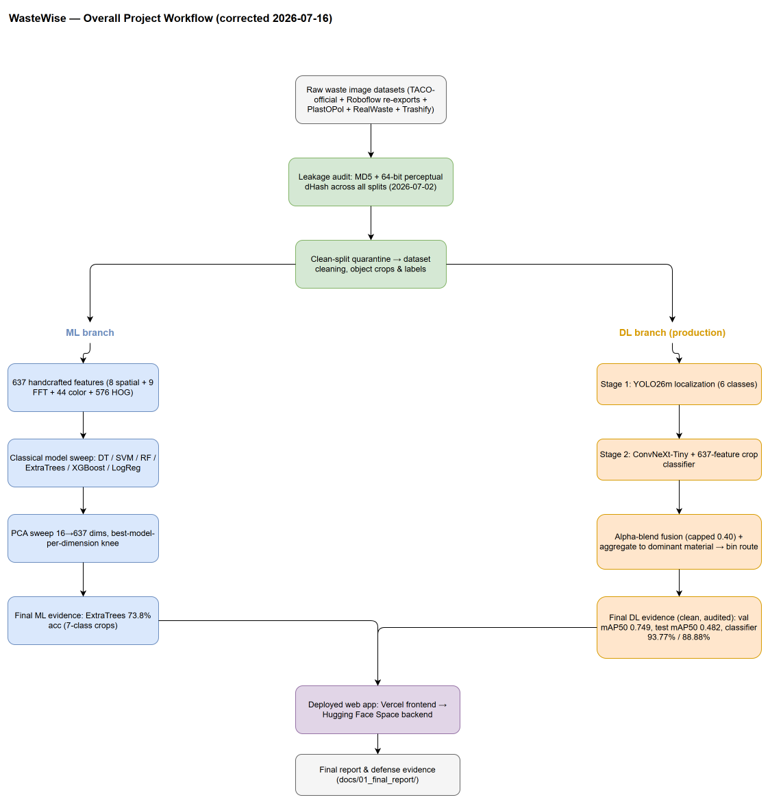
Fig 1.1. Overall system architecture.Start here: this is the whole system in one picture.
The end-to-end system: a web frontend (Vercel) sends the photo to a Hugging Face Space
backend, where the two-stage pipeline (YOLO26m localization followed by ConvNeXt
material verification) produces per-object materials, confidences, and a bin route.
Everything in the next thirteen chapters is a zoom-in on one box of this diagram.
Look at the two model boxes in the middle. Those are the only two trained components — everything else is plumbing. And the design decision worth defending is that they are two models, not one. A single classifier on a whole photo has to answer “what material is this picture?”, which is the wrong question when a photo contains four objects of three materials. Localizing first turns one hard question into several easy ones.
Why not a single end-to-end detector with material classes? It was tried: that is the YOLO26m detector's own 7-class head. The confusion matrix in the Deep Learning chapter shows its errors are almost entirely background, not material, so a second stage that only judges material on an already-cropped object is the cheaper fix.
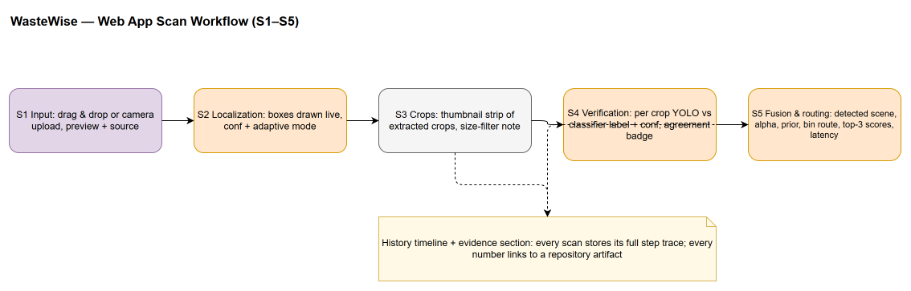
Fig 1.2. Interface design.And this is the literal screen that architecture turns into.
The scanner screen layout: image stage with detection overlays on the left, the
classification result, confidence meter, and per-class scores on the right.
And this is the literal screen that architecture turns into. You will see it running in the Live Demo.
Notice the per-class score list on the right. It is there on purpose: a single top-1 label hides whether the model was confident or barely picked a winner. The confidence meter shows the fused score, not the classifier's raw softmax — detector confidence and classifier confidence are combined before anything is shown, so the number on screen is the number the routing decision actually used.
Why show the Background class to a user at all? Because it is the veto. When Background wins, the system says it found no waste there rather than guessing a material, and users need to see that distinction.
i
What this walkthrough deliberately skips. The use-case and
entity-relationship diagrams from the written report are not repeated here.
They describe the software around the models, and in a demo they compete with
the two diagrams above that actually explain the pipeline. Both remain in the
report for the reader who wants them.
Presentation flow
Fourteen chapters, in workflow order: data first, then what was done to
it, then the models, then the evidence. Scroll each chapter’s story; the
card at its end, the arrow keys, or the dots above take you to the next one.
No single public dataset covers waste detection well. This chapter takes them
one at a time — what each source contains, how its classes are
distributed, and what it can and cannot contribute — and only then shows
the merge. Read in that order the merge stops being an assumption and becomes a
conclusion: TACO has real litter photos but sparse labels, TrashNet has clean
studio crops but no boxes, WaDaBa resolves plastic subtypes, GINI frames
garbage-vs-clean scenes, and the Roboflow projects plus PlastOPol supply extra
field imagery. Merged, the working dataset holds
31,379 images and 67,385 boxes (24,668 / 3,298 / 3,413
train/valid/test).
i
Two acquisition regimes, six sources. TrashNet and WaDaBa
contribute studio-style imagery; TACO, GINI, the Roboflow projects and
PlastOPol contribute real-world scenes. (The classifier’s crop benchmarks
later add Kaggle Garbage Classification as their studio bucket.) Each source
below is described independently, because pooling them first is what hides
the studio/field divide that the rest of the site keeps running into.
A · Each source on its own
One dataset per scene: what it holds, and what it cannot give.
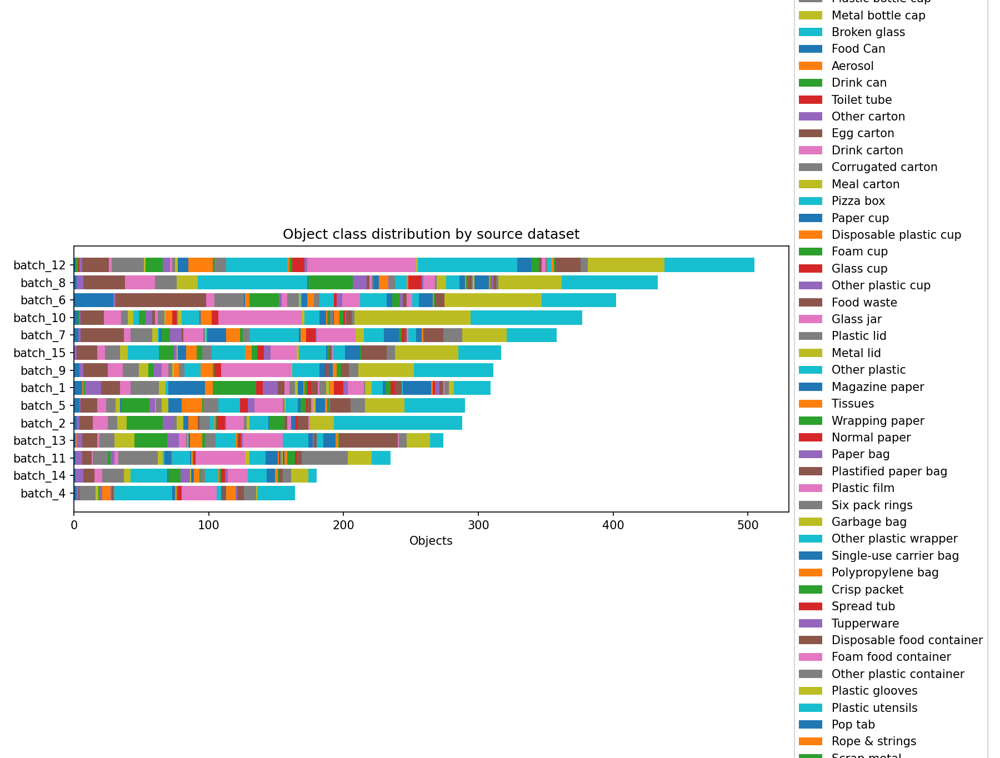
Fig 2.1. TACO source distribution.First source: TACO, for real litter in context.
TACO contributes real-world litter photos in context (streets, grass, water) with a
long-tailed class distribution dominated by plastic.
First source: TACO — the one that most resembles the deployment condition.
Notice the plastic bar dwarfing the rest. That imbalance is real-world litter composition, not a sampling mistake. TACO is the most valuable and the most awkward source. Valuable because the photos are genuine litter in genuine scenes; awkward because objects are small, occluded, and long-tailed. Almost every hard number later in this walkthrough — especially field recall — is limited by TACO-like images.
Was the long tail rebalanced? Yes — by capping per-class counts after the merge (the Preprocessing chapter), which trims the plastic surplus rather than inventing minority-class data.
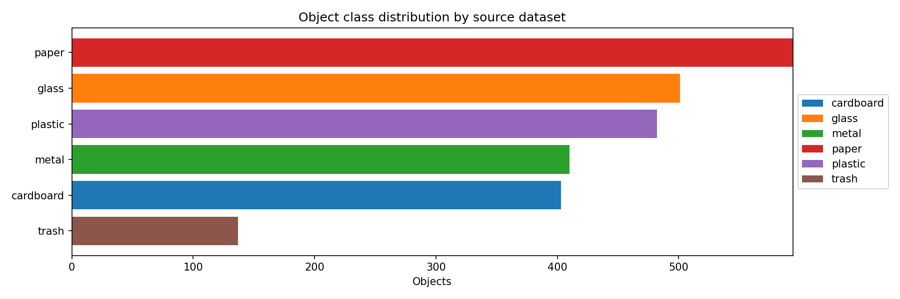
Fig 2.2. TrashNet source distribution.Second: TrashNet, for clean even-coverage studio crops.
TrashNet supplies clean, single-object studio photos with even class coverage: useful
volume for the classifier, but visually far from field conditions.
Second source: TrashNet — the exact opposite of TACO in every way that matters.
Notice how even the bars are. Even coverage is convenient, and that convenience is also the trap. TrashNet's clean single-object photos are what make the classifier's benchmark numbers look good. They are also why a model trained mostly on this source collapses on real photos — the Machine Learning chapter's domain-transfer heatmap puts a number on exactly that collapse.
Why keep it at all? Because it supplies the class balance and the volume the field sources cannot. The fix is not to drop it — it is to make sure the evaluation set is not dominated by it.
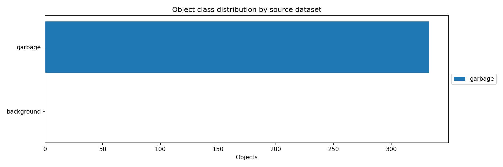
Fig 2.3. GINI source distribution.Third: GINI, for messy, cluttered garbage scenes.
GINI is a binary garbage/clean scene dataset; its positive class adds messy,
cluttered garbage scenes the other sources lack.
Third source: GINI, which contributes something none of the others do.
Just two bars — GINI is a binary dataset, with no material labels at all. It was kept for its negatives as much as its positives. Clean-scene images are what teach the Background class what “no waste here” looks like, and the Background veto is the single biggest source of false-alarm suppression in the deployed pipeline.
How does a binary dataset map into a 7-class vocabulary? Positives fold into the catch-all class, negatives into Background. It contributes scene context, not material identity.
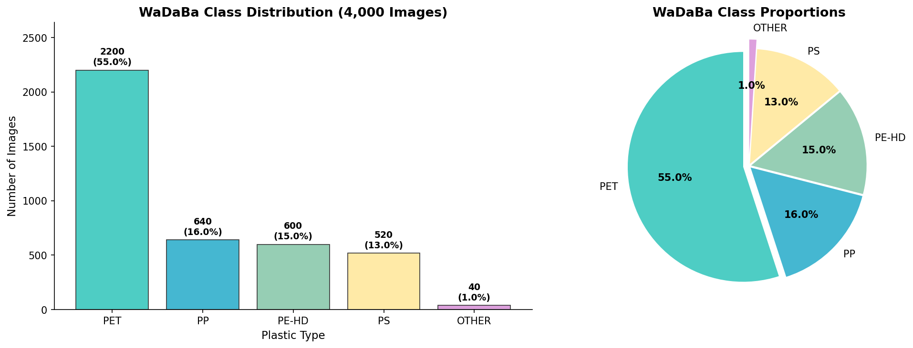
Fig 2.4. WaDaBa source distribution.Fourth: WaDaBa, for labelled plastic subtypes.
WaDaBa contributes labelled plastic packaging by polymer subtype (PET, HDPE, PP…),
folded into the single Plastic class here.
Fourth source: WaDaBa — where a deliberate piece of information was thrown away.
Look at the polymer subtype bars: WaDaBa labels PET, HDPE, PP and so on separately. In this project they all collapse into one class. That is finer than the target vocabulary, so it was flattened to Plastic. Discarding label detail feels wasteful, but a class the other five sources cannot supply examples for would be trained almost entirely on one dataset's studio look — the domain-confound problem in Fig 2.7.
Are polymer subtypes future work? Yes, and a natural extension — but it needs field photos of labelled polymers, which is a data problem rather than a modelling one.
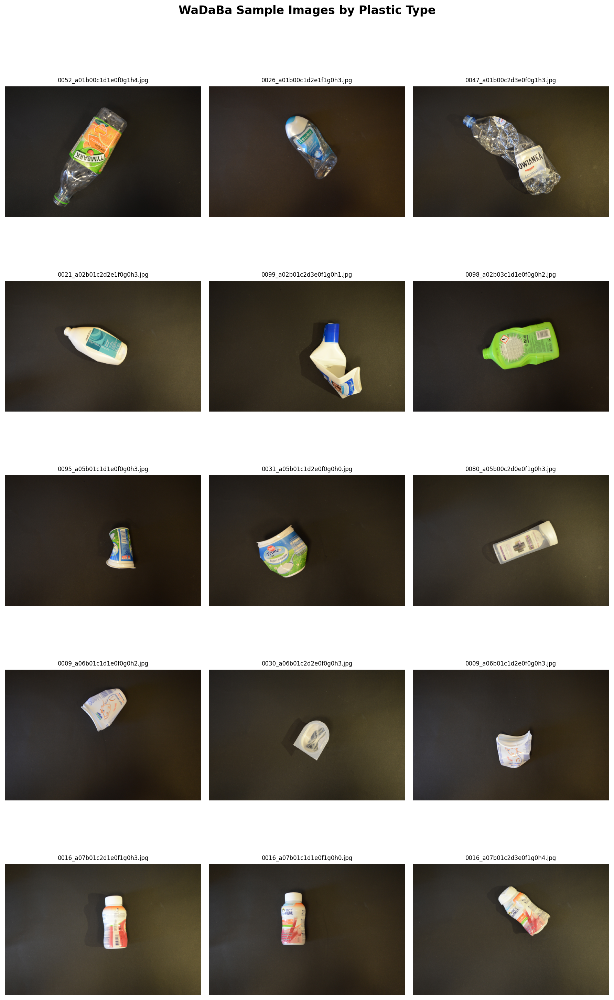
Fig 2.5. WaDaBa sample grid.A face on that last point: WaDaBa's studio look, up close.
Representative WaDaBa samples: single objects, controlled background, consistent
lighting. Studio-style sources like this are easy to classify but create the
domain gap measured later in the EDA and Discussion sections.
Put a face on the abstraction. This is what “studio domain” means.
The backgrounds: all identical. The lighting: all identical. A model can reach very high accuracy on images like these by learning the background and the lighting rather than the material. That is not a hypothetical — the Machine Learning chapter shows a classifier trained on studio images scoring 39.0% on field images of the same seven materials. Keep this grid in mind when that number appears.
How do we know the deployed model does not do this? Two pieces of evidence. Grad-CAM in the Experimental Results chapter shows activation on the object surface rather than the background, and the domain confusion matrices in the Deep Learning chapter show the deployed classifier holding 91.3% on field crops.
B · Only now, the merge
Six independent sources, one YOLO-format dataset with a shared 7-class vocabulary.
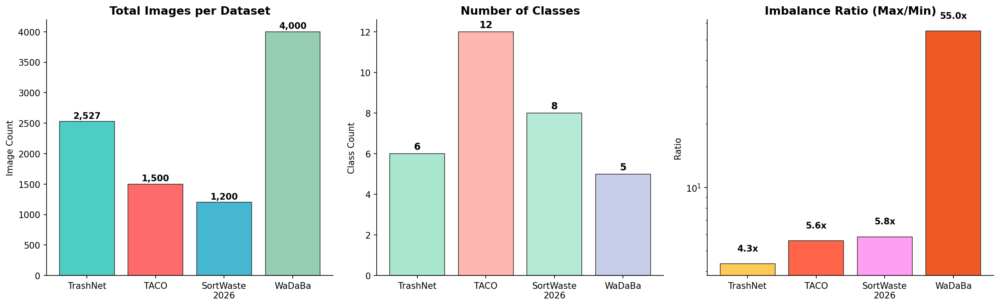
Fig 2.6. Cross-dataset comparison.Here's why a merge was necessary at all.
Class coverage and image counts across the candidate source datasets. No single
source covers all 7 target materials in both studio and field conditions, which is
the direct motivation for merging.
Before the merge can be defended, one thing has to be true: no single dataset made it unnecessary.
Look at the gaps, not the bars. Every column has at least one material it does not cover, and no column covers both studio and field conditions. Merging public datasets is normally a shortcut that gets criticised, so it needs a reason. The reason is here: the target is 7 materials photographed in the wild, and no released dataset provides that. The cost of merging is label-vocabulary conflict and duplicate images: the vocabulary is unified by the class mapping in the Preprocessing chapter, and the duplicates are what the leakage audit in the EDA chapter goes looking for.
Why not just collect original data? Because 31,379 images with box-level labels is far beyond what a single-semester FYP can annotate. The honest trade is more data of mixed provenance, audited hard, over less data of clean provenance.
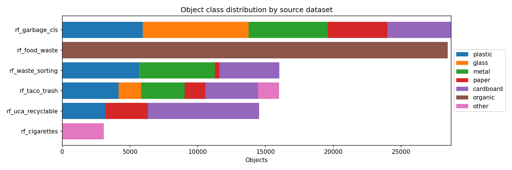
Fig 2.7. Which source feeds which class.And this is what the merge cost: a confound, not just a data problem.
Per-class composition by source dataset. Some classes are dominated by studio
sources, others by field sources, so class identity and acquisition domain
are partly entangled in the merged data.
The most uncomfortable figure in this chapter — and the reason the six sources above were introduced one at a time.
Pick any class whose bar is dominated by a single source colour. Where a class comes overwhelmingly from one dataset, the model can score well on that class by recognising the dataset rather than the material. Class identity and acquisition domain are partly entangled, and no amount of class balancing fixes it, because the confound is in the pixels, not the counts.
What was done about it? Two things. It motivated a domain-split evaluation rather than a single pooled number — producing the domain-transfer heatmap in the Machine Learning chapter — and it is why the deployed classifier was fine-tuned on the detector's own crops, so training and production share a distribution.
03 / 14 Exploratory Data Analysis
What the merged data actually looks like, including its bugs.
EDA here asks three questions about the merged dataset itself: is the class
balance usable, how small are the objects, and can the test set be trusted?
The third found a real evaluation bug: perceptual hashing showed
2,406 test images (43%) of an earlier classifier evaluation set
also appeared in training, inflating its accuracy from an honest 91.77% to
94.30%. All headline numbers on this site are measured after that leakage was
quarantined.
i
Scope note. Per-source share-of-class percentages belong to
the previous chapter, where each dataset is introduced on its own terms. Every
figure below is a property of the merged dataset and its splits, so nothing
here mixes datasets into a single percentage.
!
The number that almost shipped. 94.30% looked like a finished
result. It wasn’t: 43% of that test set was quietly sitting in training too,
recompressed or resized but still the same photo. An honest number that survives
an audit (91.77%) beats a flattering one that doesn’t, so every metric on this
site is measured after the leaked images were found and removed.
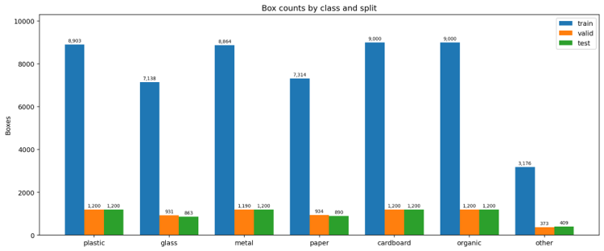
Fig 3.1. Class balance across splits.First check: is the class balance usable, split by split?
Train/valid/test box counts per class in the tuned dataset. The six materials are
near-balanced by design; “other” stays intentionally smaller.
First EDA question: is the class balance usable inside every split, not just overall?
Look at the ratio between the three bars within each class, not the absolute heights. The check is that balance holds within every split, not just overall. A dataset can be globally balanced while its test split is 40% one class — and that makes accuracy a misleading headline. Here the proportions hold, so accuracy and macro-F1 stay close throughout, and that agreement is itself the evidence. The mechanism that produced this balance — capping the majority classes and splitting by dominant class — is the next chapter’s subject; this figure is the check that it worked.
Which metric wins if they ever diverge? Macro-F1, because it weights each class equally regardless of support.
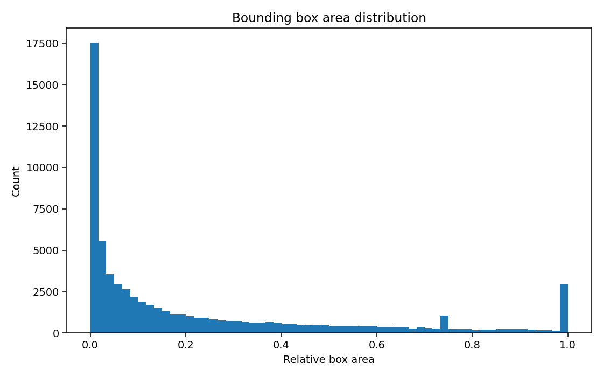
Fig 3.2. Box area distribution.Second question: how small are the objects, really?
Bounding-box areas are heavily right-skewed: the bulk of objects occupy a small
fraction of the frame. Detection difficulty concentrates in this small-object mass.
Second question: how small are these objects, really?
Notice the spike at the left edge and the long thin tail to the right. That distribution is why the project reports small-box recall as a separate metric instead of hiding it inside overall recall. A detector can post a respectable mAP while missing most of the mass in that left-hand spike, because the few large objects are easy and numerous enough to carry the average.
What counts as small? Anything below the standard small-object area threshold used by the evaluation scripts — applied identically to every model compared here, so the numbers stay comparable.
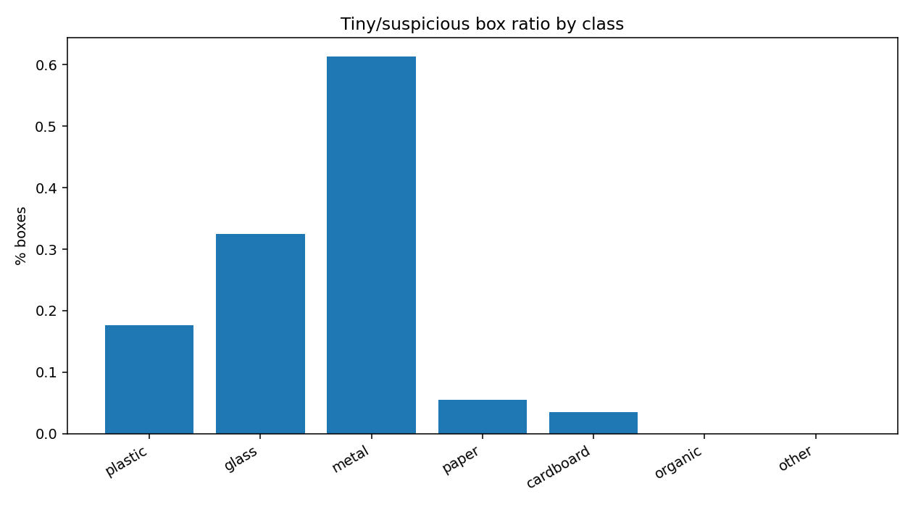
Fig 3.3. Small-box ratio per class.Same story, now broken down by class.
Share of boxes below the small-object threshold, per class. Litter-in-context
sources push several classes past 50% small boxes, which is why field
small-object recall became the project's central metric.
Same story as the last figure — but now you can see it is not evenly shared.
Look at the classes pushed past the 50% mark. Those are the litter-in-context classes, and this is where a per-class metric earns its keep. An aggregate small-box number would average the studio-sourced classes, which are easy, against the field-sourced ones, which are not — hiding the fact that difficulty tracks the source dataset rather than the material.
How did this change the project? It made field small-object recall the headline experiment metric in the Experimental Results chapter, ahead of overall mAP.
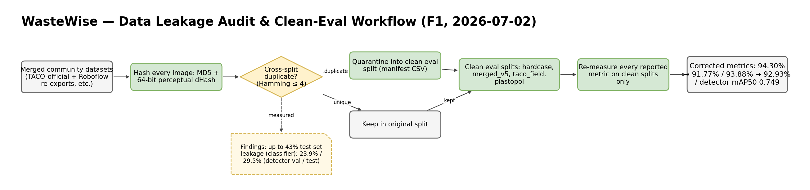
Fig 3.4. Leakage audit workflow.And here's the third, most important question: can the test set be trusted?
The audit pipeline: perceptual-hash every train and test image, cluster near
duplicates across splits, quarantine leaked test images, and re-measure every
metric on the clean set.
Third question — and the one that changed the project: can the test set be trusted?
Look at the quarantine step. Nothing is deleted; leaked images are set aside, so the decision stays reversible and inspectable. Exact-duplicate checks had already run during preprocessing and found nothing wrong. Perceptual hashing catches what byte comparison cannot: the same photo re-encoded, resized, or lightly recompressed by a different dataset's export pipeline. On a six-source merge that is not an edge case — it is the norm.
Why not just re-split from scratch? Quarantining preserves the ability to report both numbers side by side. Showing 94.30% and 91.77% on the same model is stronger evidence of a clean process than quietly publishing one number.
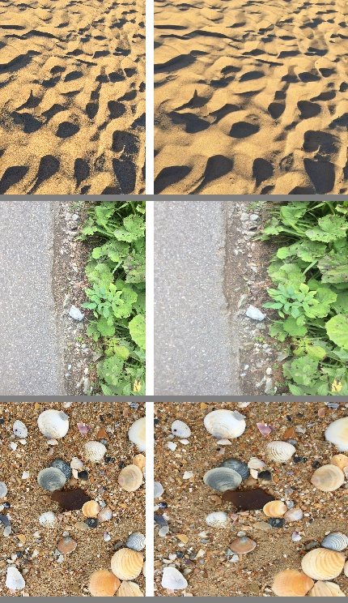
Fig 3.5. Near-duplicate spot check.This is what that leak actually looked like, caught in the act.
Actual leaked pairs caught by the audit: the same photo ingested through different
sources, sometimes recompressed or resized, landing in both train and test. This is
what silently inflates accuracy when datasets are merged naively.
This is the leak caught in the act — the most persuasive image in the whole project.
Pick a pair and confirm with your own eyes: it is the same photograph. One copy sat in train, the other in test. 2,406 images — 43% of that evaluation set — were in this state. The model was being tested on photographs it had already been trained on, so it was being rewarded for memorisation. Nothing about the model was broken; the measurement was.
Was the hash threshold tuned to produce a dramatic number? No. It was set first and spot-checked visually afterwards — which is exactly what this figure shows. The direction of the error also matters, and it is the honest one: the audit only ever lowered the reported accuracy.
04 / 14 Image Preprocessing
Preprocessing, in two domains, on real pixels.
Preprocessing comes after the EDA on purpose: every rule below exists because
the EDA found something. Dataset-level cleaning removes invalid label rows and
exact duplicates, drops degenerate boxes, re-splits train/valid/test by dominant
class, and caps per-class counts. Per-image preprocessing then runs in two
domains. In the spatial domain each detected box is cropped with
10 px padding, rejected below 24×24 px, resized to
224×224 for the network and 64×64 for the handcrafted branch, then
reduced to grayscale, gradient and mask views. In the
frequency domain the same 64×64 crop is mean-centred and
transformed with a 2D FFT, and its power is summed over eight radial bands. Every
panel below is a real crop through the real code, not a diagram of it.
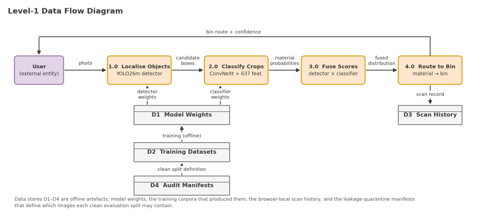
Fig 4.1. Preprocessing data flow.The whole pipeline as a flow: raw archives in, one clean dataset out.
The path from raw source archives to training-ready data: format conversion to YOLO
labels, class mapping to the 7-material vocabulary, dedup and validity filtering,
dominant-class re-splitting, and per-class balancing caps.
Six archives in, one dataset out. Every arrow here is a step that had to be defended.
Start with the dominant-class re-split box — the least obvious step, and the one that matters most. Images are split by their dominant class rather than randomly, so a multi-object photo cannot land in train and have its rare class evaluated in test. Random splitting on a detection dataset silently correlates the splits. This is the same family of mistake as the leakage found in the EDA chapter — caught here by design rather than by audit.
What does “validity filtering” remove? Label rows outside image bounds, zero-area and degenerate boxes, and exact-duplicate files. Near-duplicates survive this stage — which is precisely why the perceptual-hash audit was still needed afterwards.
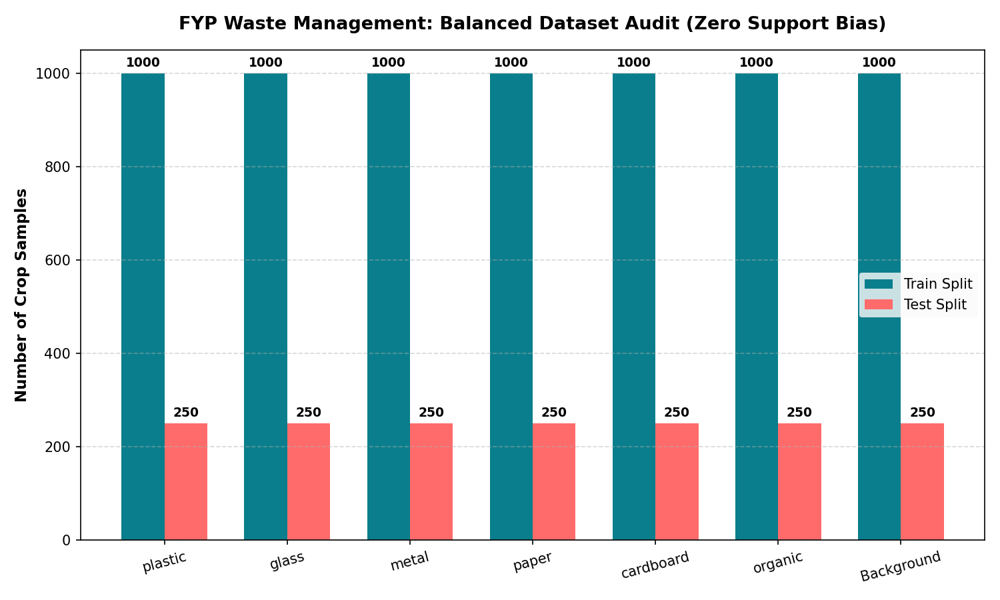
Fig 4.2. Class balance after preprocessing.Here's what that balancing pass actually bought.
Per-class box counts after balancing: the six materials sit near parity
(roughly 7,100–9,000 train boxes each), with the smaller catch-all
“other” class kept for background pressure.
This is what the balancing pass actually bought.
Notice the flat top across the six material bars — roughly 7,100 to 9,000 boxes each — next to the shorter catch-all bar. Balancing here works by capping the majority classes, not by oversampling the minorities. Duplicating minority images would inflate every metric that follows without adding a single new pixel of information. Capping throws data away, which feels wrong — and is the honest option.
Why is the catch-all class deliberately left small? It is not a material anyone routes to a bin. It exists to absorb objects that are clearly waste but not one of the six, so the detector is not forced to mislabel them.
A · Spatial domain
Operations on the pixel grid itself: crop, gate, resize, grayscale, gradient, mask.
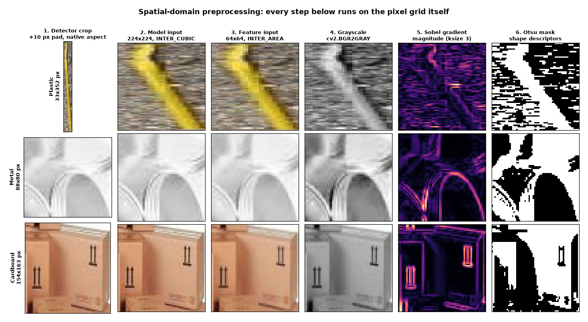
Fig 4.3. The spatial-domain chain, on three real detector crops.Six steps, left to right, on crops the deployed detector actually produced.
Each row is one crop from detector_crops_v1 taken through the
served pipeline: the padded box, the 224×224 network input
(INTER_CUBIC), the 64×64 handcrafted-feature input (INTER_AREA),
grayscale, Sobel gradient magnitude, and the Otsu mask the shape
descriptors are measured on.
Start with the first column and note the aspect ratios: 33×352, 88×80, 154×163. Nothing here is square.
That is the first honest thing this figure shows. Every downstream step forces the crop to a square grid, so a long thin crop is stretched. The alternative — letterboxing to preserve aspect — pads real texture with grey, and for a material classifier texture is the entire signal. Distortion was chosen over padding deliberately, and the augmentation in the next figure is partly there to make the model tolerant of it.
Why two different resize targets? The network wants 224×224 because that is what its pretrained weights expect. The handcrafted branch wants 64×64 because its 637 features were defined at that size, and changing it would shift every feature distribution the deployed classifier was trained on.
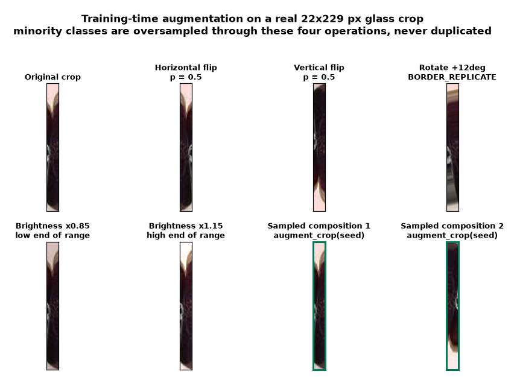
Fig 4.4. Training-time augmentation, one operation at a time.And this is how minority classes are grown without duplicating a single image.
The four operations in augment_crop() shown in isolation
— horizontal flip, vertical flip, ±15° rotation with
replicated borders, brightness ×0.85–1.15 — then two
sampled compositions as the training loader would produce them.
Balancing by capping majority classes was the dataset-level answer. This is the image-level one.
Look at the rotation panel and its replicated border: the frame is filled by repeating the edge pixel rather than with black, because a black wedge is a strong artificial edge and the HOG and gradient features would read it as real structure. Every operation here is chosen to be photometrically or geometrically plausible for a waste crop. What is deliberately absent is anything that changes hue — colour is 256 of the 637 features and a large share of the classifier’s evidence, so shifting it would be training the model on a lie.
Is this the same as oversampling? No, and the distinction matters for the leakage story. Duplicating a minority image inflates metrics without adding information. These transforms produce a crop the model has genuinely not seen, and the two right-hand panels are what the loader actually emits.
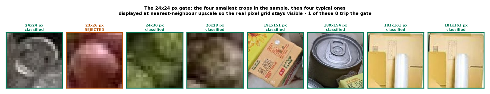
Fig 4.5. The 24×24 px gate, on the smallest real crops.The EDA said most boxes are small. This is where the small ones stop.
The four smallest crops in a sample of the detector-crop set beside four
typical ones, each labelled with its true pixel size and whether it clears
the min(w, h) ≥ 24 gate. Displayed at nearest-neighbour
upscale so the real pixel grid stays visible.
This is the figure the box-area histogram in the EDA was pointing at all along.
Look at the 23×26 crop and try to name the material. That is the honest test, and it is why the gate exists: at that size there is no texture left, only a colour blob, and the classifier will still return a confident label for it. Refusing to answer is better than a confident guess the interface presents as a result. Note the crop right next to it at 24×24 that does clear the gate — the threshold is a hard line through a continuum, which is exactly what makes it worth stating out loud.
What does the gate cost? Real detections, and the cost is visible rather than absorbed: small-object detection recall is tracked as its own metric throughout the site, so dropping these boxes never quietly improves a headline number.
B · Frequency domain
The same crop read as spatial frequencies: 2D FFT, radial bands, band reconstructions.
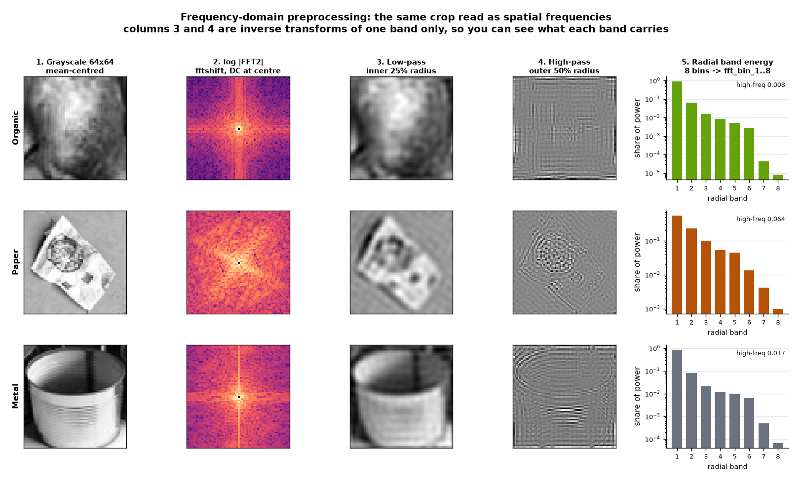
Fig 4.6. The frequency-domain chain, on three real crops.Same crops, different representation — and columns 3 and 4 show what each band actually holds.
Grayscale 64×64 mean-centred input, its log-magnitude 2D FFT
(fftshift applied, DC at centre), the inverse transform of the inner 25%
of radius, the inverse transform of the outer 50%, and the eight radial
band energies that become features fft_bin_1..8.
Columns 3 and 4 are the point of this figure: each is a real inverse transform of one band only.
Compare them. The low-pass reconstruction keeps the object’s shape and lighting and loses all its surface. The high-pass keeps the surface — the corrugation, the print, the specular speckle — and loses the object. Material identity lives in the second one. That is the whole reason a frequency representation is computed at all rather than trusting the pixel grid: the eight radial band energies measure how much of the crop’s power sits in fine detail versus coarse structure, in nine numbers instead of 4,096 pixels.
Why mean-centre before transforming? Because the DC term is just average brightness. Left in, it dominates the power spectrum and every band ratio becomes a measure of exposure rather than of texture.
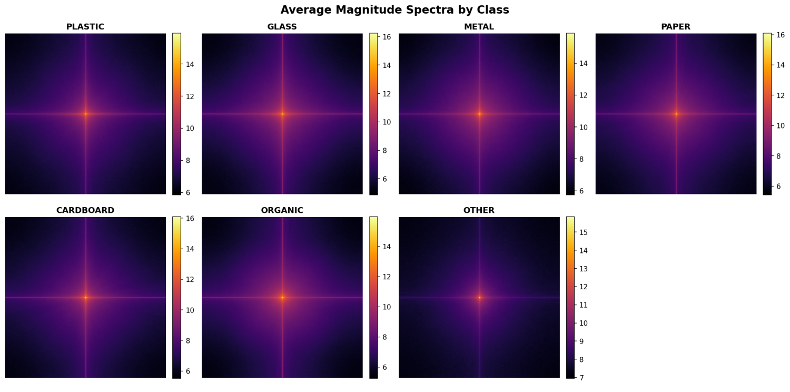
Fig 4.7. Average power spectrum per class.One crop proves nothing — so here is the same transform averaged over thousands, and the answer is uncomfortable.
Mean log magnitude spectrum per class over the analysis crop set, including
the catch-all “other” class. All seven panels are dominated by the
same DC spike and the same axis cross (the artefact of a non-periodic square
crop). The only readable difference is in the colour-bar ranges and the
slightly broader, warmer centre on organic.
Compare the seven panels and the honest verdict is: they look the same. That is worth showing rather than hiding.
The raw averaged spectrum is not a class signature. Every panel is swamped by the DC spike at the centre and by the horizontal and vertical cross, which is not object structure at all — it is the discontinuity at the crop border, an artefact of transforming a non-periodic square patch. Whatever class information exists is buried under both.
So why compute a frequency representation at all? Because the features are not the spectrum — they are eight ratios of energy in radial rings, normalized by total power. Normalizing divides out the DC dominance and the overall exposure that make these panels look alike, and the class ordering that survives is the one measured in the next chapter’s per-class frequency figure. This panel is the control that shows the ratios are doing real work, not the raw transform.
C · What the detector finally trained on
The output of everything above, as Ultralytics sees it.
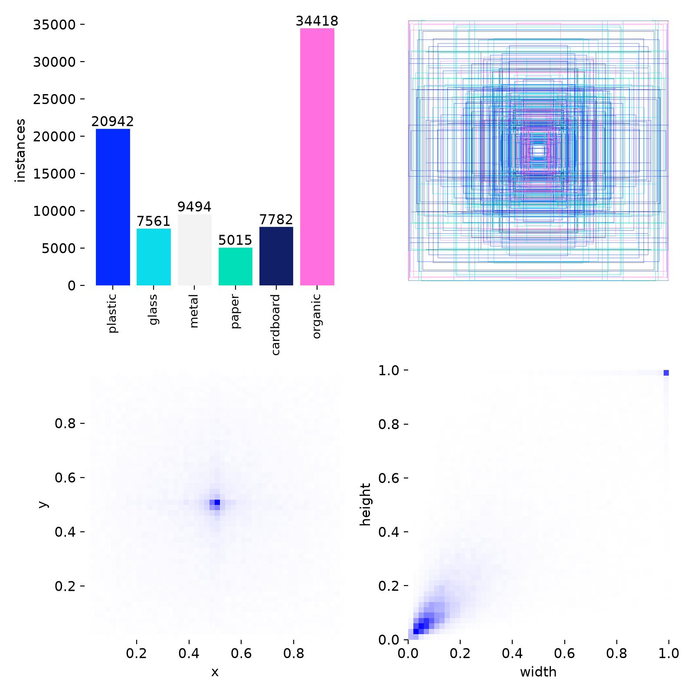
Fig 4.8. Final detector label statistics.And this is the exact dataset the deployed detector trained on.
Ultralytics label summary for the deployed detector's training set: class
frequencies, box placement, and box size distributions. Most boxes are small and
centered, a preview of the small-object challenge analyzed in the EDA.
This is the exact dataset the deployed detector saw, straight out of Ultralytics.
Look at the box width–height scatter in the lower right. The dense cluster near the origin is the whole small-object problem in one plot. Most boxes occupy a small fraction of the frame, and they are concentrated near the centre — photographers aim at what they are photographing. Both facts predict the failure mode measured later: recall, not precision, is what limits this detector.
Why not simply train at higher resolution? It was tried. A 960 px run left validation unchanged and lifted unseen-batch recall by 3.9 points, which did not justify the cost. The Discussion chapter covers what did work instead.
05 / 14 Feature Extraction
637 numbers per crop, and what every one of them is.
Both branches of the system consume the same handcrafted feature vector, so it
gets its own chapter rather than a footnote. The deployed extractor
(scripts/custom_feature_extractor.py, imported directly by the
served API) turns each crop into 637 floats: 256 colour, 47
texture, 10 shape and 324 edge features. Most of them literally are
histograms — histogram bins used as features — so this chapter shows
them as histograms rather than describing them.
A second 637-D vector, used only for the domain study.
The classical-branch analysis uses a different decomposition of the same
budget: 8 spatial statistics (intensity mean, std,
percentiles, gradient mean and std, edge density), 9 frequency
features (8 radial FFT bands + a high-frequency energy summary),
44 colour and 576 HOG. It exists because
those 17 spatial and frequency scalars have physical meaning a
histogram bin does not, which is what makes the domain-importance and
per-class distribution figures below readable. Both vectors are 637-D;
they are not the same 637 numbers, and the figures below say which is which.
i
Why handcrafted features at all, next to a deep network?
Three reasons, all measurable. They are the interpretable branch’s entire
input, so its 73.8% is a floor achieved with no learned representation. They
are concatenated into the deployed hybrid classifier alongside the ConvNeXt
embedding, so they contribute to the shipped prediction. And they are cheap
and deterministic: the same crop yields the same 637 numbers on every
machine, which the network’s embedding cannot promise across versions.
A · The histogram blocks
Colour, texture and edge: 627 of the 637 features are histogram bins or their descriptors.
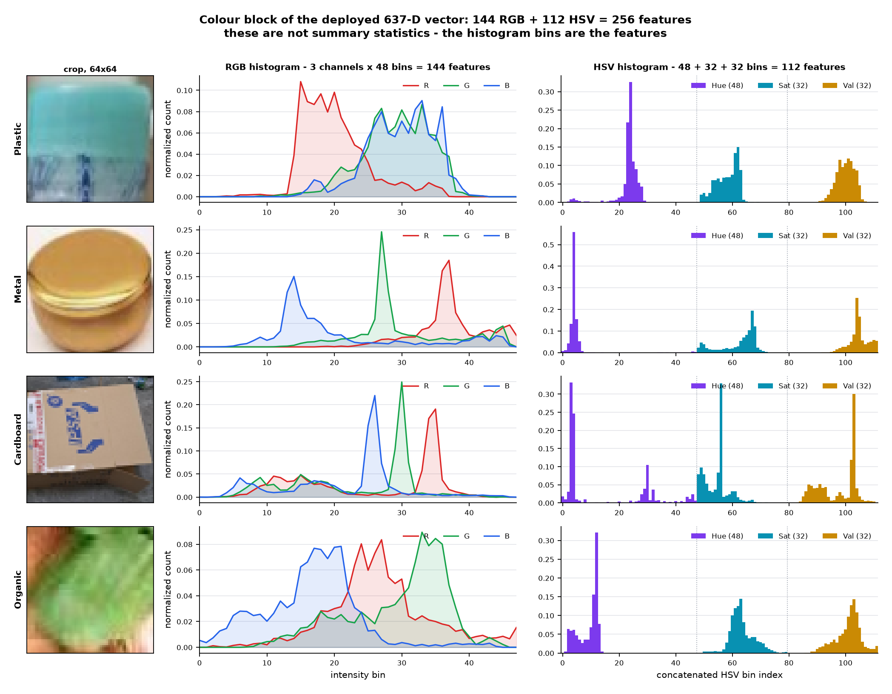
Fig 5.1. Colour block: 144 RGB + 112 HSV bins = 256 features.These are not summary statistics — the bins are the features.
Real 48-bin RGB and 48/32/32-bin HSV histograms for one crop of four
classes, computed by compute_color_features() at 64×64.
Each plotted bar is one dimension of the deployed 637-D vector.
Read the metal row against the organic row and the reason colour dominates becomes obvious.
Metal’s channels are three narrow separated spikes — a small number of surfaces, each near-uniform. Organic’s are broad overlapping humps spread across most of the range, because a piece of food waste is many colours at once. That difference in shape is what a tree ensemble can split on, and it is not available from a mean and a standard deviation, which is exactly why the full 256 bins are kept instead of six summary numbers.
Why both RGB and HSV? They fail differently. RGB entangles colour with brightness, so a shadowed white bottle and a grey one look alike. HSV separates hue from value, so hue survives a lighting change — and lighting change is the whole studio-versus-field problem. Keeping both means the classifier can use whichever is stable for a given crop.
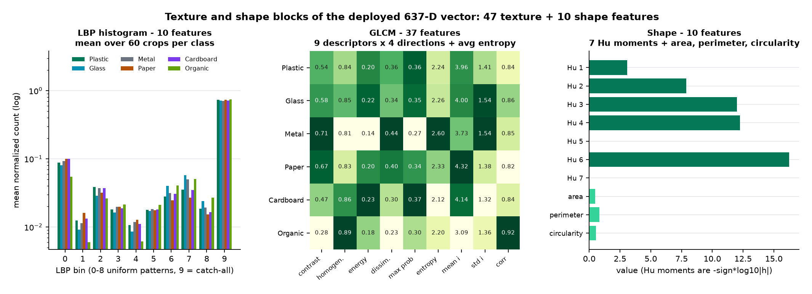
Fig 5.2. Texture and shape blocks: 47 + 10 features.The texture half, averaged over 60 real crops per class.
Left: the 10-bin LBP histogram per class on a log axis. Middle: the nine
GLCM descriptors, shown averaged over their four directions and colour-
normalized per column. Right: the 10 shape features of one metal crop,
seven log-scaled Hu moments plus area, perimeter and circularity.
Two honest findings here, and one of them is a flaw in the project’s own code.
Start with the LBP panel and note that bin 9 holds roughly 70% of the mass in every class. That bin is a catch-all: the implementation counts only the first ten uniform patterns and collapses all 198 non-uniform ones into bin 9, so most of the histogram lands there. It is documented in the extractor’s docstring rather than quietly fixed, because the deployed classifier was trained on features from this exact function — correcting the binning would shift the feature distribution and invalidate the shipped weights. Train/serve parity beat textbook LBP.
What about the GLCM panel? That one works as intended, and organic is the class it separates: lowest contrast, highest homogeneity and highest correlation of the six. Food waste is locally smooth in a way manufactured packaging is not, and the co-occurrence descriptors pick that up where the colour histogram cannot.
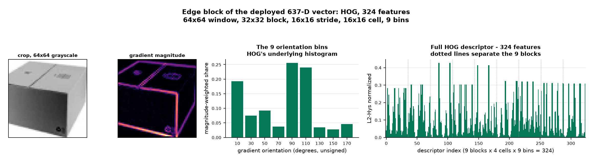
Fig 5.3. Edge block: HOG, 324 features.HOG is a histogram of oriented gradients, so here are the orientations.
A real cardboard crop, its gradient magnitude, the nine magnitude-weighted
orientation bins that HOG is built from, and the full 324-dimensional
descriptor with its nine blocks marked. Parameters as deployed:
64×64 window, 32×32 block, 16×16 stride, 16×16
cell, 9 bins.
This is the largest single block — 324 of 637 features — so it is worth seeing what it encodes.
Look at the orientation histogram: the two tallest bars sit at 90° and 110°, with a third at 10°. That is the box’s edges, and it is a claim about geometry, not material. Which raises the obvious objection: why spend half the vector on shape when the whole project argues material is surface? Because HOG at a 16×16 cell on a 64×64 crop is not measuring the object outline. It is measuring local gradient structure within sixteen small tiles — corrugation, creases, print — which is texture described in the language of edges.
Does the evidence back that up? Yes — the domain-importance figure at the end of this chapter puts edge/HOG at 36.5% of the tree ensemble’s total feature importance, second only to colour, while the explicit shape block (Hu moments, area, perimeter, circularity) carries 1.4%. If HOG were tracing outlines it would be measuring the same thing as that shape block, and would score like it. It does not.
B · Distributions across classes
Do the features actually separate the materials? Histograms over hundreds of real crops.
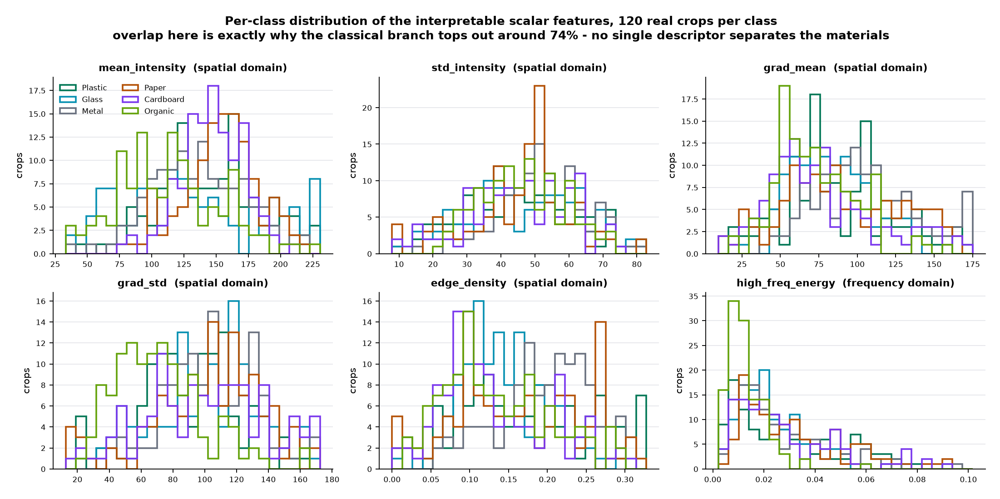
Fig 5.4. Per-class distribution of the interpretable scalar features.The question every feature table dodges: do these numbers separate the classes?
Six of the analysis vector’s scalar features — five spatial, one
frequency — as class-wise histograms over 120 real detector crops per
class. The top 1% of values is clipped so the bulk of each distribution
stays readable.
The answer is: barely, one at a time. That is the finding, not a disappointment.
Pick any panel and try to draw a line that separates two classes. There isn’t one. Every distribution overlaps every other heavily — the clearest signal in the whole figure is organic sitting slightly left on grad_mean and grad_std, which just says food waste has softer edges than packaging. This is precisely why the classical branch tops out near 74% while the deep classifier reaches the low nineties: no single handcrafted descriptor is discriminative, so accuracy has to come from combining hundreds of weak ones.
Then why show a figure that undercuts the branch? Because the alternative is showing a feature table and letting the audience assume each row is informative. The tree ensembles do genuinely reach 73.8% on these features, and they do it by conditional combination — which is a much more interesting claim once you have seen how weak the individual axes are.
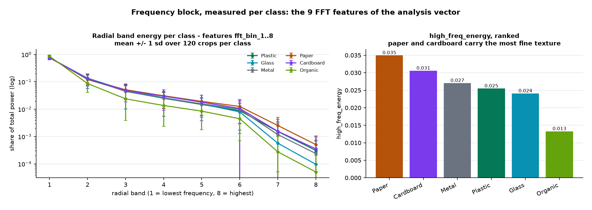
Fig 5.5. Frequency block, measured per class.And the one block where the class ordering is exactly what physics predicts.
Left: mean radial band energy with one standard deviation, over 120 real
crops per class, log axis — features
fft_bin_1..8. Right: high_freq_energy ranked by
class.
After the last figure’s overlap, here is a feature whose class ordering can be predicted before looking.
Read the right-hand ranking: paper 0.035, cardboard 0.031, then metal, plastic, glass, and organic last at 0.013. Fibrous printed surfaces carry the most fine detail; a smooth glass or plastic surface carries the least; food waste is the smoothest of all. That is the ordering material physics predicts, recovered from the data with no supervision. On the left, the same fact appears as paper and cardboard holding the highest curves in bands 6 to 8 while organic falls fastest.
Does one good feature rescue the classical branch? No — look at the error bars, which overlap between neighbouring classes. It is a real signal with a low ceiling on its own, and it earns its nine dimensions by being informative in combination, not alone.
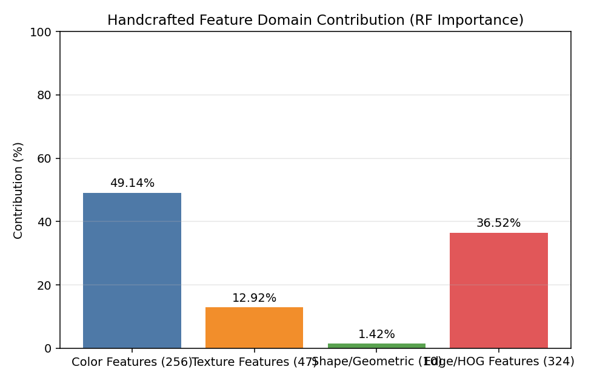
Fig 5.6. Which feature block the ensemble actually uses.And the payoff of a fully interpretable branch: it can say which block of features it is actually using.
Random-forest feature importance summed over the four blocks of the deployed
637-D vector: colour (256) 49.1%, edge/HOG (324)
36.5%, texture (47) 12.9%, shape/geometric
(10) 1.4%. Note that importance is not proportional to block
size — texture carries 12.9% of the decision from 7% of the dimensions,
and shape carries almost nothing.
Here the classical branch answers a question the deep model cannot: which kind of evidence is it actually using?
Read the four bars against the feature table at the top of this chapter. Colour and HOG together carry 85.7% of the decision, and shape — the Hu moments, area, perimeter and circularity — carries 1.4%. That is the project’s central claim about material recognition, measured rather than asserted: material identity is surface, not silhouette. Which is reassuring for a second reason too, given that crops arrive at arbitrary aspect ratios and get squashed to a square grid — a model leaning on shape would be leaning on a distortion artefact.
This is a testable claim, and Grad-CAM in the Experimental Results chapter independently confirms it on the deep side.
Why keep a classical branch at all? Because it produces explanations of a kind the deep model cannot. Feature importances are a property of the fitted trees, not a post-hoc reconstruction like a saliency map.
06 / 14 Model Pipeline
Localize first, classify second.
Stage 1 finds objects, which is what YOLO is good at. Stage 2 verifies the
material of each crop, which is what a dedicated classifier is good at, and
filters false alarms with a Background veto class. The two chapters after this
one train the two branches separately — classical machine learning first,
then deep learning — so each is auditable on its own before they are
compared.
S1
Upload image
A JPG, PNG, or WEBP photo of waste. Saved scans stay in browser history for review and hard-case collection.
S2
Stage 1: YOLO26m localization
YOLO26m proposes a box around every candidate object. 100-epoch retrain, promoted from YOLO26s for higher field recall and precision: 74.9% mAP50, 83.4% precision on clean validation.
S3
Crop extraction & size filter
Each kept box is cropped with 10 px padding; boxes smaller than 24×24 px are rejected before classification.
S4
Stage 2: crop verification
A ConvNeXt-Tiny + 637-handcrafted-feature classifier re-checks every crop across 7 classes, including a Background veto. Fine-tuned on the detector's own crops so training matches production.
S5
Score fusion, context prior & bin routing
Per-box score fuses detector and classifier confidences, a scene-context prior adjusts the class scores, and the dominant material is routed to its bin by a direct material→bin lookup.
i
The Background veto is the load-bearing wall. The Deep Learning chapter’s detector confusion matrix shows the detector’s errors are misses and false alarms, not material mix-ups — a second stage that re-judges every crop, plus a Background class that can veto, is aimed at exactly that error profile.
Fig 6.1. Two-stage pipeline, S1–S5.The five steps above, drawn as one flow.
The production flow exactly as served: upload, YOLO26m localization, crop
extraction with size filtering, ConvNeXt verification, then score fusion and bin
routing.
Five steps, one flow. Follow the data from S1 to S5 and watch where it narrows.
Look at the size filter between S3 and S4. It is the only step that discards data, and it is there for a reason. Boxes under 24×24 px are rejected before classification, because a crop that small carries almost no material texture — and the classifier will still return a confident label for it. Refusing to classify beats a confident guess the interface presents as a result.
Does that filter throw away real detections? Yes, and it is a genuine trade. It is also why small-object detection recall is tracked separately, so the cost of this filter stays visible instead of being absorbed into a single accuracy figure.
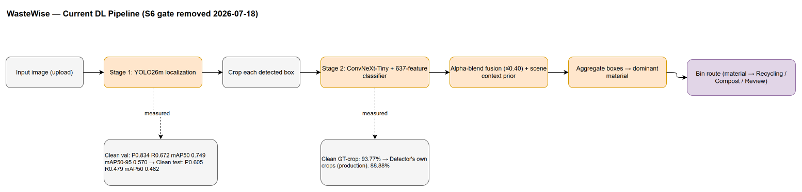
Fig 6.2. Deep-learning branch.Split that flow in two. First, the deep path.
The DL data path: detector crops feed the ConvNeXt-Tiny backbone; its embedding is
concatenated with the 637 handcrafted features before the final material head.
Split that flow in two. First, the deep path — the one that actually ships.
Notice the concatenation node where the ConvNeXt embedding meets the 637 handcrafted features. This is a hybrid, not a pure deep model. The learned embedding and the hand-designed colour, FFT, HOG and spatial features feed one head together. The handcrafted half is cheap, deterministic, and encodes exactly the evidence the classical branch showed matters most for material.
Do the handcrafted features earn their place? They are the same 637 features the classical branch reaches 73.8% with on their own, so they carry real signal rather than noise. Keeping the two branches feature-compatible is what makes the classical model an interpretable stand-in for the deep one.
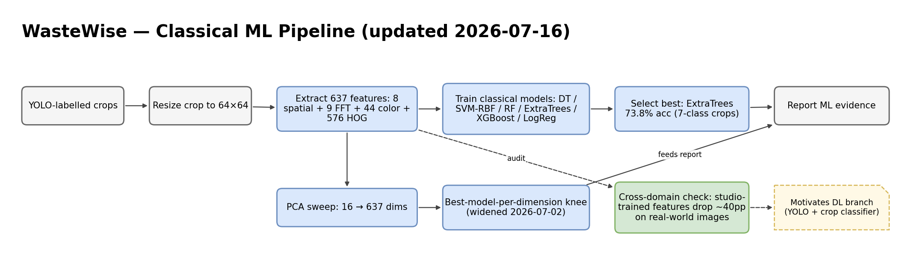
Fig 6.3. Classical ML branch.And the classical path, running alongside it.
The explainable path: the same crops are summarized into 637 handcrafted features
(spatial, FFT, color, HOG) and classified by tree ensembles, kept as
interpretable evidence beside the deep model.
And the classical path, running on identical inputs.
Notice that it starts from the same crops as the deep branch. That is what makes the comparison fair. This branch is not a fallback, and it is not padding. It is a controlled comparison: same crops, same splits, same metrics, different hypothesis class. Without it, “the deep model is better” would be an assumption rather than a measurement.
Did it earn its place? It is the branch that discovered the domain-shift problem. Training it on studio images and testing on field images exposed the 39.0% collapse — the finding that reframed the rest of the project around field data.
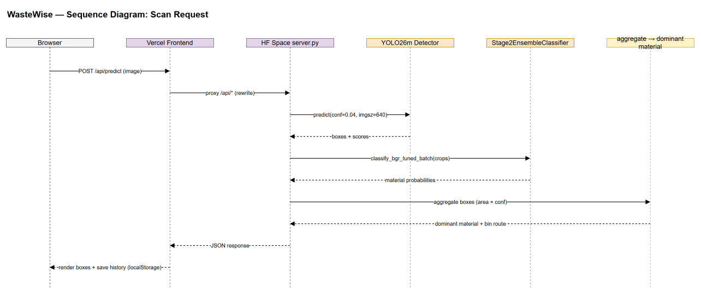
Fig 6.4. Scan sequence.Same pipeline again, now as a sequence over time.
Interaction sequence for one scan: browser → API → detector →
classifier → fused response, with the frontend rendering boxes and scores as
they return.
The same pipeline a third time — now ordered by time rather than by data.
Look at the single request–response pair between browser and API. One round trip, not one per object. Both stages run server-side inside a single request, because sending crops back to the browser for a second call would multiply latency by the number of detections — and a cluttered scene can produce a dozen. The sequence view is how you see that cost before you build it.
What about latency? It is reported live on the demo page after every scan, so the claim is checkable rather than asserted.
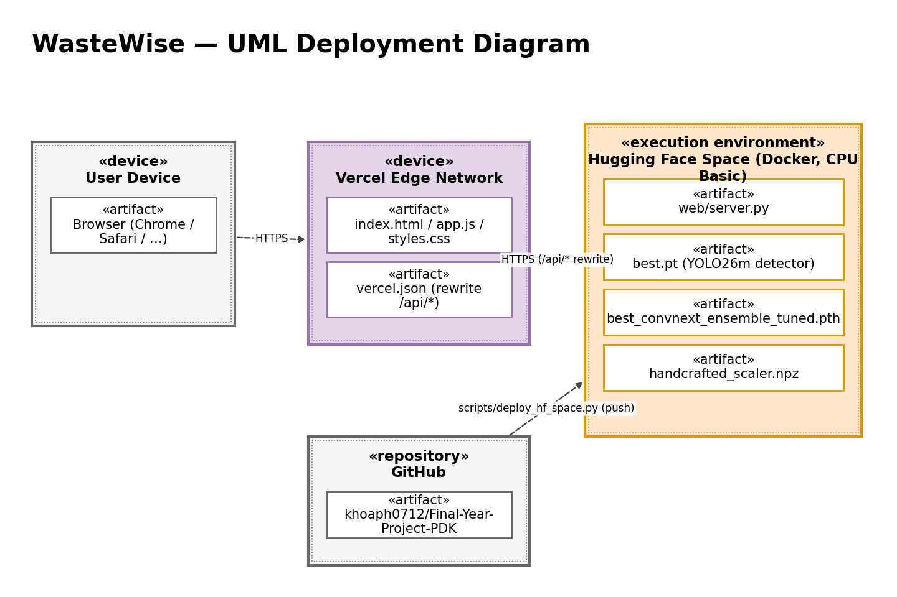
Fig 6.5. Deployment topology.And this is where it all actually runs.
Static frontend on Vercel; model server on a Hugging Face Space carrying the
YOLO26m and ConvNeXt checkpoints. When the API is offline the page says so instead
of pretending.
And this is where it actually runs.
Notice the split: a static frontend on one host, a model server carrying the checkpoints on another. The two halves have completely different requirements. The page is static files and can be cached at the edge; the models need a Python runtime and hundreds of megabytes of weights. Keeping them apart means this page stays up even when the model host is asleep.
What happens when the backend is down? The status indicator in the header turns over and the page states it plainly. It does not fall back to a canned result and present it as a live scan — the easy demo-day shortcut, and a dishonest one.
07 / 14 Machine Learning Models
The ML track: tree ensembles on 637 handcrafted features.
The classical branch is kept as a separate track so it can be tracked on its
own terms. It sees exactly the crops the deep branch sees, summarized into the
feature vector of the previous chapter, and is fitted with six model families.
The best of them, ExtraTrees, reaches 73.8% on the balanced
crop benchmark — roughly 20 points behind the deployed deep classifier,
fully inspectable, and the branch that discovered the project’s
domain-shift problem.
i
Why the ML track is not a loss-curve chapter. These models
are fitted on an already-extracted feature matrix, not trained end-to-end on
pixels by gradient descent, so there is no per-epoch loss to plot. The right
artifacts are confusion matrices, ranked accuracy and macro-F1, and
dimensionality sweeps — all four of which are below.
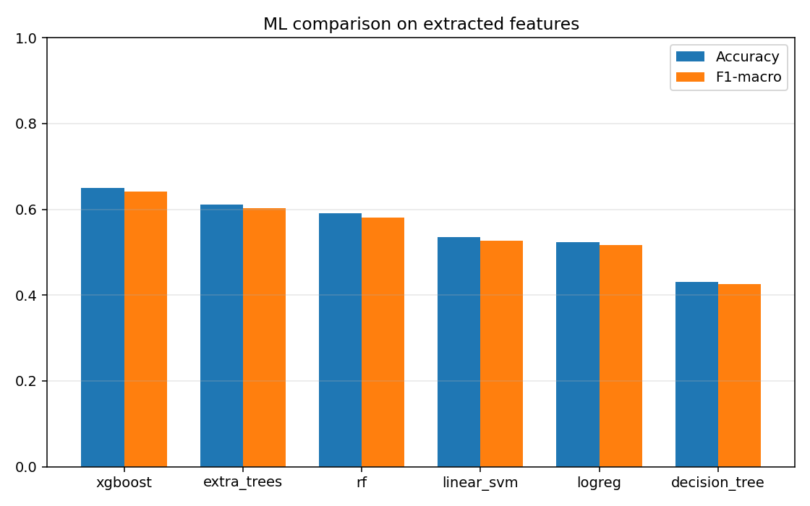
Fig 7.1. Classical model family, ranked.Now the classical family on its own.
Accuracy and macro-F1 for six classical models on the balanced 6-class benchmark.
Tree ensembles lead; margin- and linear-based models trail on the 637-feature
vector.
Start with the whole classical family, ranked, so the choice made inside it is defensible before anything is compared to a network.
Notice the tree ensembles clustered at the top and the linear models trailing. The split is not arbitrary. Linear models need the classes to be separable by a hyperplane in the raw 637-dimensional space, and material identity is not linear in colour histograms and HOG bins. Tree ensembles carve the space with axis-aligned thresholds and can combine features conditionally — which is what this problem needs.
Why plot both accuracy and macro-F1? To show they agree. Where they agree, the balanced benchmark is doing its job and no class is being quietly ignored.
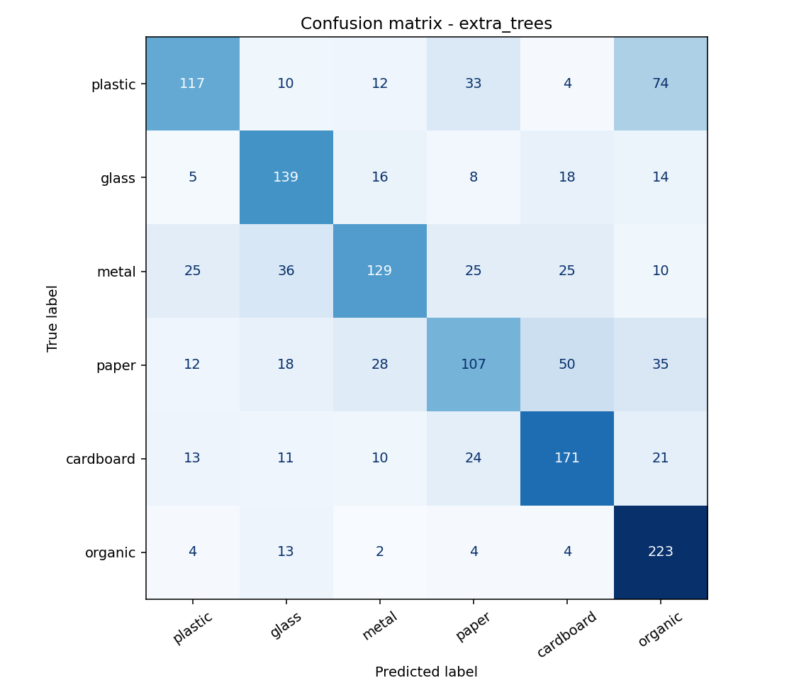
Fig 7.2. Classical baseline confusion (ExtraTrees).The best classical model, class by class.
The best classical model on 637 handcrafted features. A clearly weaker diagonal
than any deep model, but every split of every tree is inspectable.
The winner of that ranking, class by class — and the honest shape of a 73.8% model.
Notice how much mass sits off the diagonal. Against the deep classifiers in the Model Comparison chapter the gap is roughly 20 points, and it is not close. Stated plainly: accuracy is not what the classical branch is for. What it offers instead is that every decision traces to a named feature and a threshold you can read.
Is the classical branch just decoration, then? No, on two counts. It supplies the 637 features the deployed hybrid actually consumes, and it is the branch that found the domain-shift result at the end of this chapter.
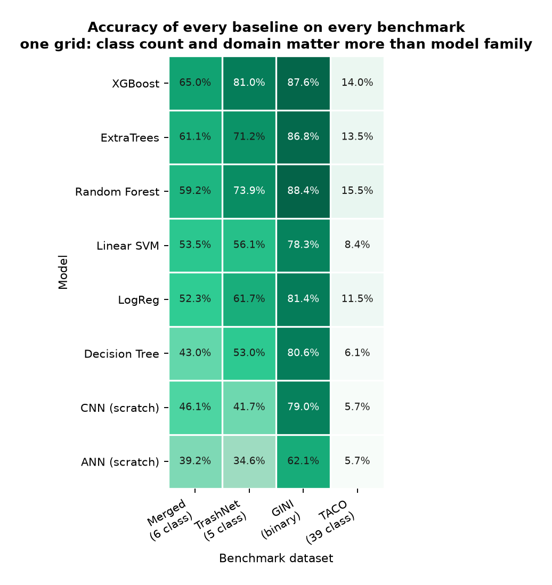
Fig 7.3. Every baseline on every benchmark, one grid.Widen the view: the same eight models, now across four different datasets.
Accuracy for eight baselines on four benchmarks. Reading down a column ranks the
models; reading across a row shows how little that ranking matters next to the
dataset itself. The same XGBoost model scores 87.6% on the
binary GINI task and 14.0% on 39-class TACO.
Read this one across, not down. The columns are the story, and they are more dramatic than any row.
Trace the XGBoost row: 65.0%, 81.0%, 87.6%, 14.0%. One model, four datasets, a 73-point spread. Within any column, the best model beats the worst by about 20 points. Moving between columns swings accuracy by up to 73. The dataset — its class count and its domain — dominates the model choice completely. Any paper reporting a single accuracy without naming the dataset is reporting almost nothing.
Why does the TACO column collapse to single digits? 39 classes with very low support each, and real-world occlusion. It is included precisely because it is unflattering; leaving it out would make the classical branch look far stronger than it is.
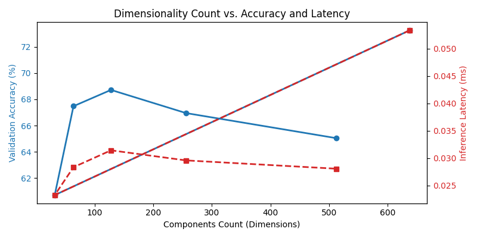
Fig 7.4. PCA of the feature space.A natural question: can those 637 features compress for free?
Explained variance vs component count for the 637-feature vector: a few dozen
components carry most variance, but the long tail still contributes accuracy, so
aggressive reduction costs performance.
A fair question at this point: are 637 features actually needed, or is that just padding?
Look at the knee of the explained-variance curve, where a few dozen components already account for most variance. Read naively, this curve says the feature vector could be compressed by an order of magnitude almost for free. That reading is wrong, and the next figure is the reason. Explained variance measures how much the data spreads along a component — not how much that component helps separate the classes.
Why test it at all? Because 637 features per crop is real inference cost, and cutting it would have been worth having. It was tested rather than assumed — and the answer came back no.
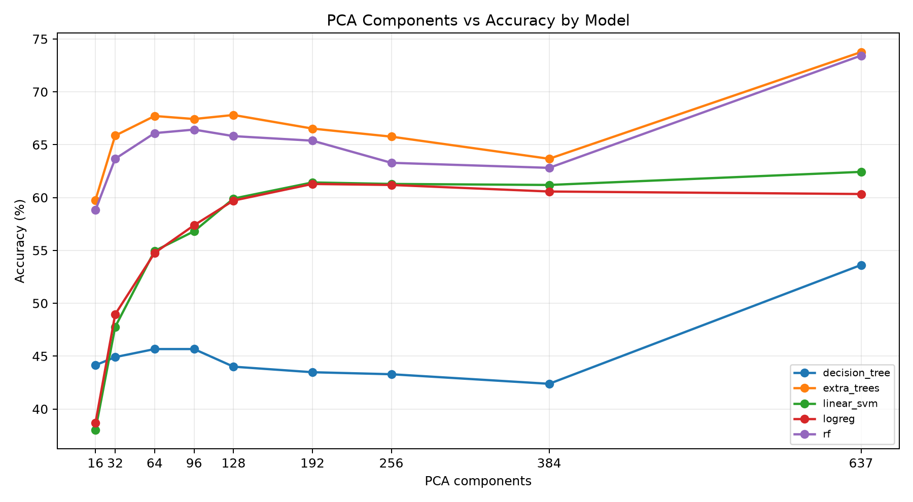
Fig 7.5. Accuracy vs PCA dimension, per model.No: tree ensembles need almost the whole vector to hit their ceiling.
Sweeping PCA dimensionality across classical models: accuracy saturates near the
full feature vector for tree ensembles, confirming the 637 features are not
redundant enough to compress for free.
And the answer is no: the tree ensembles need almost the whole vector to reach their ceiling.
Notice where each curve flattens — close to the full dimensionality, not at the variance knee. This is the pair of figures that makes the point. Variance concentrates in a few dozen components; accuracy does not. Low-variance components still carry class-discriminative information, so PCA chosen by explained variance would have quietly cost accuracy. Two plots, and the intuitive answer turns out to be the wrong one.
What does this mean for deployment? The 637-feature extraction stays in the pipeline at full width. The compression opportunity was tested and declined on evidence.
The result that changed the project
Train the classical model on one acquisition domain, test it on the other.
!
The gotcha the classical branch exposed. Train the 637-feature
model on studio photos and test it on real-world field photos, and accuracy falls
off a cliff: from 79.8% in-domain down to 39.0%. Studio and
field photos are the same materials lit and framed differently, and that gap is the
whole reason field-domain data and matched operating points matter more than another
point of benchmark accuracy.
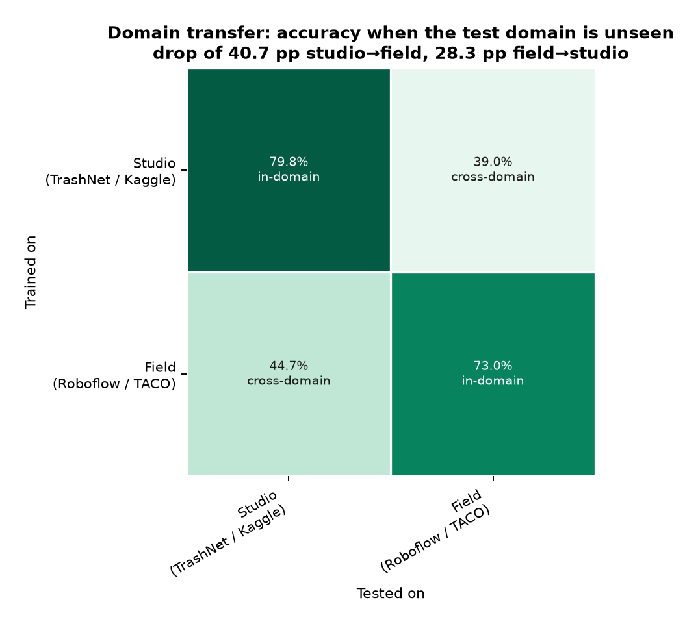
Fig 7.6. Domain transfer: train on one domain, test on the other.The callout above quotes a cliff. This is the cliff, with all four numbers on it.
Both domains share the same 7 material classes, so the only variable is how the
photos were captured. On the diagonal, the model is tested on the domain it was
trained on; off the diagonal it meets an unseen one. Accuracy falls
79.8% → 39.0% going studio to field, and
73.0% → 44.7% going the other way.
If one figure from this project is worth remembering, it is this one. Give it time.
Start with the diagonal: both in-domain numbers are respectable. Then move to the off-diagonal and let the drop land. Nothing changed except which photographs the model had seen. Same seven materials, same features, same training procedure. Cross the domain boundary and accuracy roughly halves, to 39.0% — which on seven classes is not far above chance for the harder classes. A benchmark number tells you almost nothing about a domain the model has not met.
Why is the gap asymmetric — 40.7 points one way and 28.3 the other? Because field data is more varied, so a model trained on it transfers to clean studio images better than the reverse. Diversity in training buys generalisation. That asymmetry is the direct argument for the hard-negative mining on new field data in the Experimental Results chapter, and it is why the deployed pipeline trains on both.
08 / 14 Deep Learning Models
The DL track: one detector, then the classifier shoot-out.
The deep track splits cleanly in two, and is presented that way. Stage 1
is the detector: a 100-epoch YOLO26m retrain, promoted from YOLO26s
after it won on field recall. Stage 2 is the classifier: the
deployed ConvNeXt-Tiny + 637-feature hybrid, fine-tuned on the detector’s own
crops so training matches production, plus the four comparison models
(EfficientNetB0, ResNet50, MobileNetV2, a from-scratch tiny CNN) trained on the
same balanced crop benchmark. ResNet50 and MobileNetV2 were retrained for 15
epochs so their curves show where each model stops learning and starts
memorizing; the earlier 2-epoch runs were too short to read.
A · Stage 1 — the detector
Training curves and the error profile that justifies a second stage.
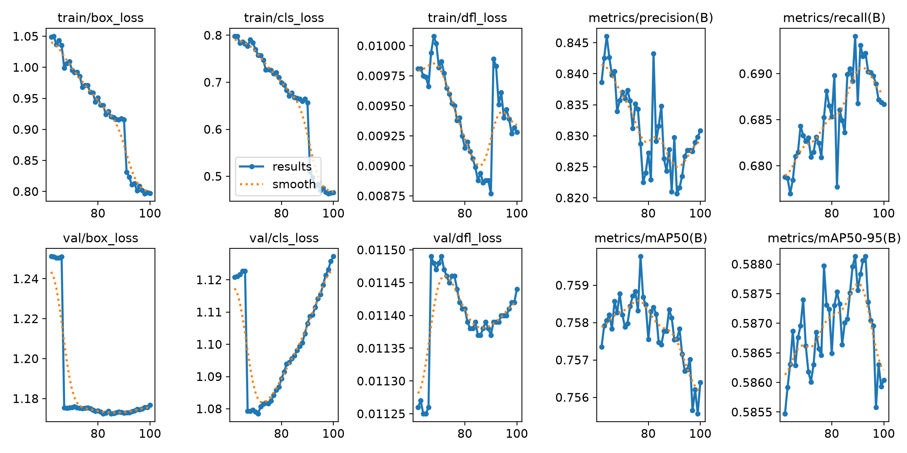
Fig 8.1. Deployed detector training curves (YOLO26m, 100 epochs).Start with the deployed detector's own curves.
Box, classification, and DFL losses fall smoothly on train and validation while
precision, recall, mAP50, and mAP50-95 climb. There is no divergence between train and
val curves, i.e. no visible overfitting at 100 epochs.
Start with the model that is actually deployed, then work outwards to what it beat.
Look at the train and validation loss curves: they stay together for the full 100 epochs. That absence of divergence is the interesting result. Train and validation track each other to the end, so the run stopped for budget reasons, not because the model started memorising. Capacity is not the binding constraint here — consistent with everything the Discussion chapter concludes about data being the lever.
Was it under-trained? Possibly, and that is the honest answer. The curves flatten but never turn, so more epochs would likely buy a little more. It was not pursued because the field-recall gap was an order of magnitude larger than anything another 50 epochs would close.
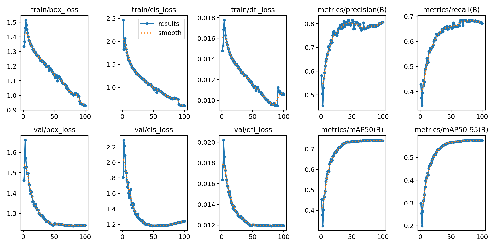
Fig 8.2. Predecessor detector (YOLO26s).Here's what it replaced.
The earlier YOLO26s run that YOLO26m replaced. Its curves plateau lower; the
promotion decision came from matched-operating-point comparison, not curves alone.
Here is what it replaced — and why the replacement decision was harder than it looks.
Notice the plateau. The plateau is not what settled the choice. Comparing two detectors by their curves is a trap, because each curve is drawn at its own default confidence threshold; two models can swap places entirely once you hold the operating point fixed. The promotion was decided by re-running both at the same threshold on the same field set, where YOLO26m won on recall — 78.1% against 70.9%.
Why did clean-validation recall dip slightly on the newer model? Because it did, from 69.0% to 67.2%, and that is reported rather than hidden. Studio-validation recall is not the metric this system is optimised for; field recall is, and it rose by 7.2 points.
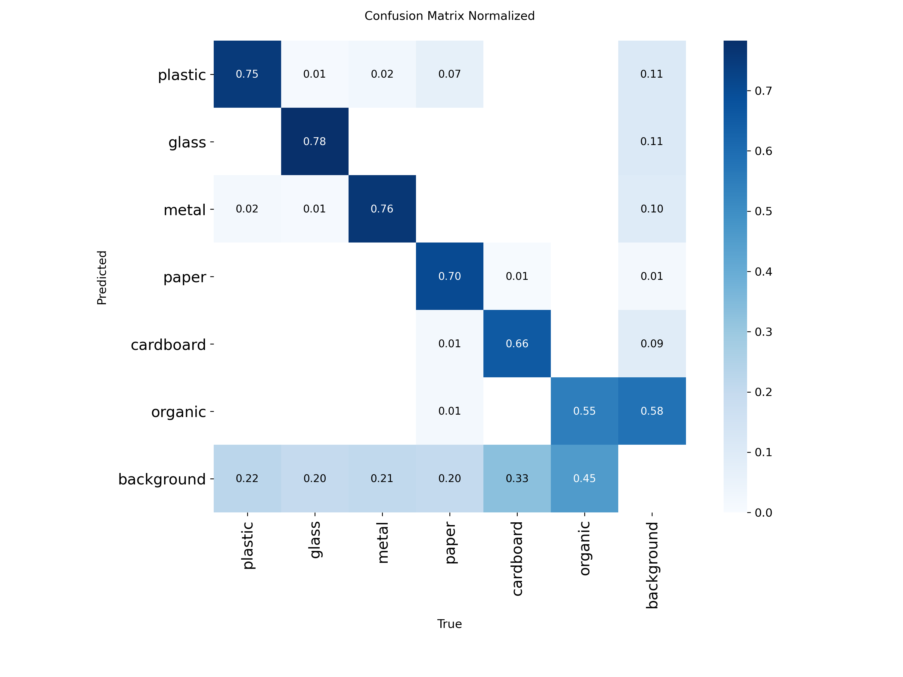
Fig 8.3. Detector confusion matrix (normalized).And this is the detector's error mode: background, not cross-material mix-ups.
Per-class detection confusion on validation. The strong diagonal shows materials
are rarely confused with each other; the main error mode is background
(missed objects and false alarms), not cross-material confusion.
This matrix is the single best justification for the whole two-stage design.
Look at the background row and column, then at how clean the off-diagonal material cells are by comparison. The detector almost never calls glass “metal”. What it does is miss objects and invent them. Those are localization errors, not material errors. A deeper detector would not fix that — but a second stage that only judges already-cropped objects, plus a Background class that can veto false alarms, addresses exactly this error profile.
Why normalized rather than raw counts? Because the classes have different support: raw counts would make the largest class look like the worst offender purely by volume. Row-normalising makes each row a per-class error rate.
B · Stage 2 — the deployed classifier
The model actually served, and the domain split its pooled accuracy was hiding.
i
Read the curve, not just the final number. ResNet50’s
validation loss bottoms out at epoch 3 of 15; everything after that is
memorization wearing the costume of more training. MobileNetV2 buys three extra
epochs before the same thing happens, at a tenth of the parameters, which is why
parameter count alone never settles a model choice here.
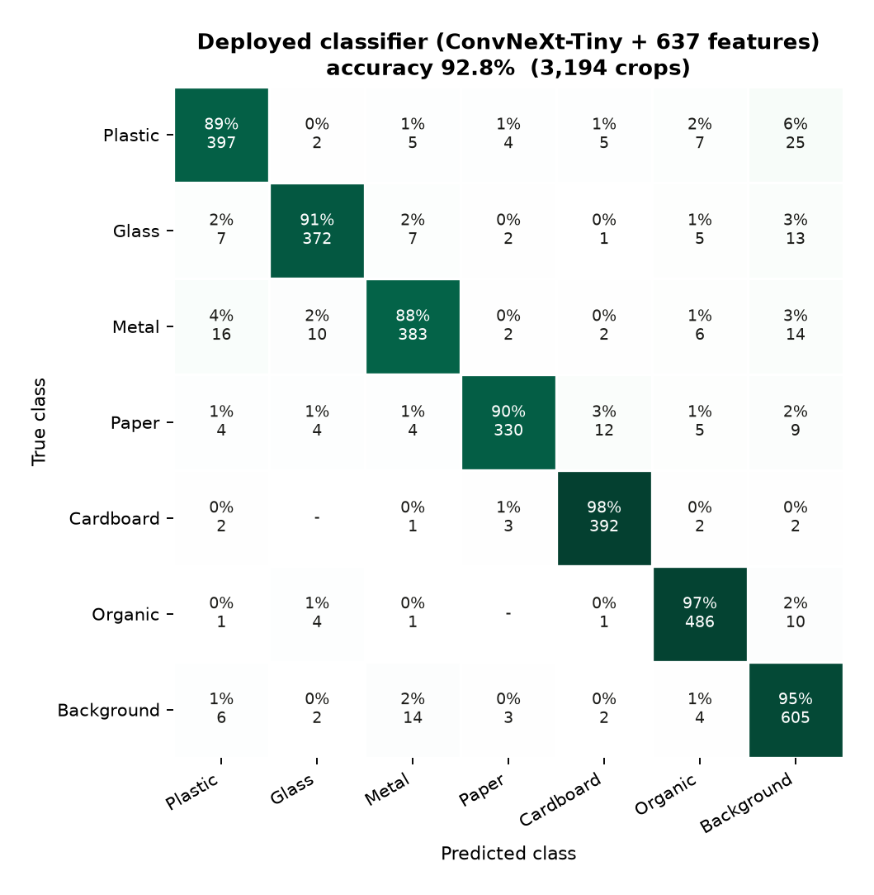
Fig 8.4. Deployed classifier confusion matrix (ConvNeXt-Tiny + 637 features).The detector's errors were background. Here is what the second stage does with what survives.
Crop-level confusion for the model actually served in the demo, measured on the
leakage-quarantined merged test split (3,194 crops, 92.8% accuracy). Cells show
the row-normalized rate above the raw count. The diagonal is strong across all
seven classes; the largest single leak is Plastic misread as Background.
Every other classifier confusion matrix in this chapter is a model that was rejected. This is the one that ships.
Start with the Background column — specifically the Plastic row's 6% leaking into it, the biggest off-diagonal cell in the grid. The failure that matters is not a material mix-up; it is the veto firing on a real object. Twenty-five plastic crops were called Background, which in production means the item silently does not appear in the results. That is a miss the user cannot see, which makes it worse than a visible wrong label.
Why is Cardboard the strongest class at 98%? It has the most distinctive texture of the seven — corrugated edges and a consistent matte brown — and it is well represented in both studio and field sources. The classes that suffer are the ones that depend on specular highlights, which lighting destroys.
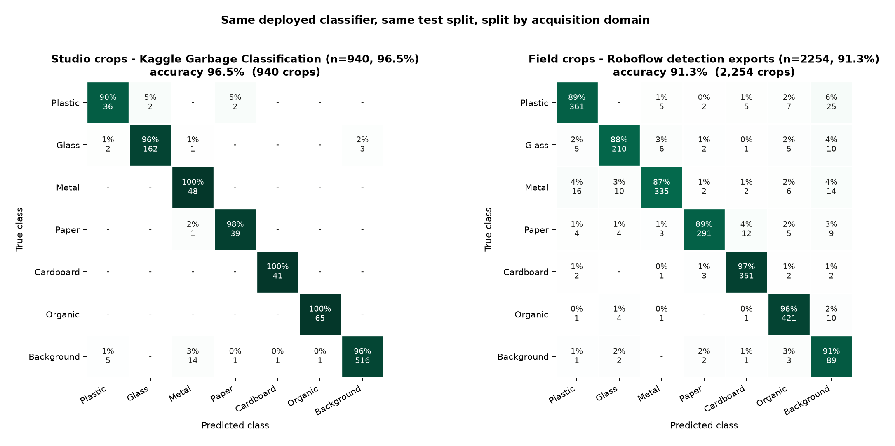
Fig 8.5. The same classifier, split by acquisition domain.Now split that matrix in two, because the average was hiding something.
The 3,194 test crops separated by source: studio crops (Kaggle Garbage
Classification, n = 940) on the left at 96.5%,
real-world field crops (Roboflow detection exports, n = 2,254) on the
right at 91.3%. Same weights, same split, same threshold; only
the acquisition conditions differ.
This is the figure that answers the worry raised back at the WaDaBa sample grid in the Dataset chapter.
Read the two accuracy figures in the panel titles first — 96.5% against 91.3% — then notice how much emptier the studio matrix is. A single pooled number, 92.8%, would have concealed a five-point domain gap. The studio panel is nearly diagonal, with three classes at 100%, because those images are trivially separable. The field panel is where the real errors live, and field is what the deployed system meets.
Does this contradict the 39.0% cross-domain collapse in the Machine Learning chapter? No, and the distinction is important. There, a model is trained on one domain and tested on a domain it has never seen. Here, both domains are in training, and the residual five-point gap is the honest difficulty difference that remains once the model has seen both. That difference is the entire argument for training on field data.
C · Stage 2 — the models it beat
Four rejected classifiers, same crops, same split, so the choice is defensible.
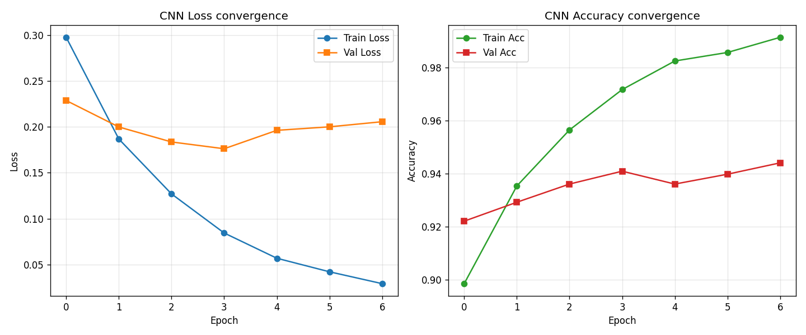
Fig 8.6. Classifier training (tuned EfficientNetB0 era).Now the classifier era that the leakage audit later corrected.
Accuracy and loss curves for the tuned EfficientNetB0 classifier that preceded the
ConvNeXt model. This is the run whose test set the leakage audit later corrected
from 94.30% to 91.77%.
Now the classifier era that the leakage audit later corrected. The curves themselves are fine.
Look at the healthy validation accuracy — that is exactly the problem. Nothing in these curves signals that anything is wrong. Loss falls, validation tracks, accuracy climbs. Data leakage does not show up as a pathological curve, because from the model's point of view nothing pathological is happening. It is only visible by auditing the images, which is why curve-reading is not a substitute for dataset hygiene.
Was the model retrained after the audit? The successor was, on quarantined splits. This run stays visible because it makes the before-and-after comparison concrete.
Fig 8.7. EfficientNetB0 confusion matrix.Its confusion matrix: mostly clean, paper vs cardboard the one weak spot.
Crop-level confusion for the EfficientNetB0 classifier. Most mass sits on the
diagonal; residual confusion concentrates in visually similar pairs like
paper–cardboard.
Its confusion matrix — and the one error that survives into every model in this project.
Notice the paper and cardboard cells trading mass with each other. This is the only structured error in the matrix, and it is not really a model failure. Cardboard is paper, mechanically pressed. A cropped fragment of a flattened box under poor lighting is genuinely ambiguous, and human annotators disagree on the same crops.
Does it matter operationally? Much less than the matrix suggests, because paper and cardboard route to the same bin. The routing table absorbs this particular confusion — worth stating plainly so it is not mistaken for a hidden failure.
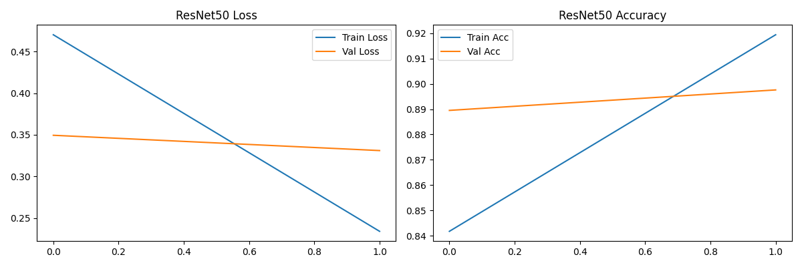
Fig 8.8. Comparison model: ResNet50.This is the curve the callout above is talking about.
15 fine-tuning epochs on the same balanced crops. Train loss falls from 0.65 to
0.05 while validation loss bottoms out at epoch 3 and then drifts
back up: everything after epoch 3 is memorization, not learning. Validation accuracy
stays flat near 92% (best 92.2%), so the model is comfortably past underfitting and
into mild overfitting. It reaches that accuracy with 23.8M parameters, the
accuracy-per-parameter argument against it made in Model Comparison.
This is the curve the callout above is talking about. Trace it left to right.
Find epoch 3 on the validation loss curve — the lowest point — then follow the line as it drifts back up while train loss keeps falling. That divergence is textbook overfitting, and it starts twelve epochs before training ends. Everything after epoch 3 makes the model fit the training set better and the world slightly worse. The final accuracy number, 92.2%, hides all of this: the curve is the evidence, the number is just a summary.
Why not stop at epoch 3, then? For a deployed model you would, with early stopping. This run was deliberately allowed to finish because its purpose was to show where each architecture breaks — which a stopped run cannot.
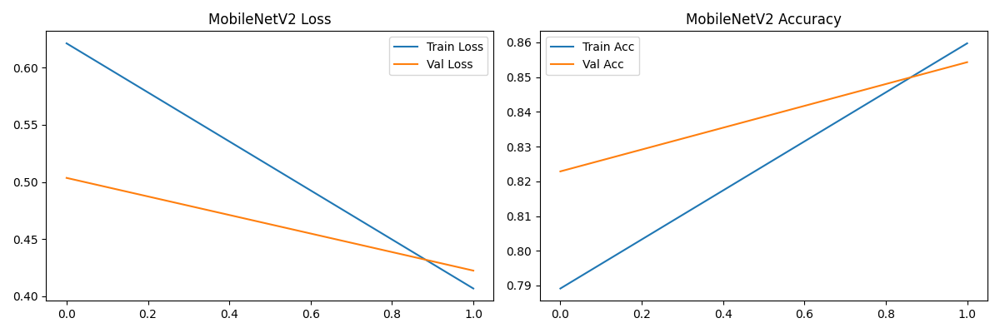
Fig 8.9. Comparison model: MobileNetV2.And its smaller sibling, which buys three extra epochs before the same thing happens.
The same 15-epoch schedule on the smallest deep comparator (2.4M parameters).
Validation loss bottoms at epoch 6, three epochs later than
ResNet50, and the train/validation accuracy gap opens more slowly: a smaller model
overfits this dataset less readily. It plateaus at 91.4%, below ResNet50, because its
thin feature layers under-represent the texture detail that separates glass from
plastic.
Its smaller sibling, same schedule — and the comparison makes a general point about capacity.
Look at epoch 6, where this one bottoms out, and contrast it with epoch 3 on the previous figure. A tenth of the parameters buys three extra epochs before overfitting starts, and the train/validation gap opens more slowly. But it also plateaus lower, at 91.4%. Capacity is a two-sided knob here: less of it delays memorisation and caps the ceiling at the same time. That is why parameter count alone never settles a model choice.
Why does it lose to ResNet50 specifically? The classes it gives up ground on are glass against plastic, which separate on fine specular texture. MobileNetV2's thin depthwise feature layers under-represent exactly that.
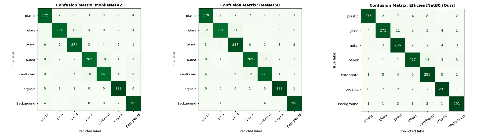
Fig 8.10. Confusion matrices, side by side.All three classifiers, same crops, side by side.
Crop counts for MobileNetV2 (91.4%), ResNet50 (92.2%), and EfficientNetB0 (94.3%) on
the same balanced test split, 300 crops per class in every panel. The diagonal
sharpens left to right: the visual version of the accuracy ranking in the comparison
table. All three share the same worst pair, paper against cardboard.
All three classifiers, same crops, same split, side by side. Read it left to right.
Watch the diagonal sharpen across the three panels, then find the paper–cardboard cell appearing in all three. Two things are visible at once: the ranking — 91.4%, then 92.2%, then 94.3% — and the fact that all three fail on the same pair. A shared error across three different architectures is not an architecture problem; it is telling you something about the data. That is the difference between reading a confusion matrix and reading an accuracy table.
Why are the panels comparable? 300 crops per class in every panel, one balanced test split, one loader. The only variable is the model.
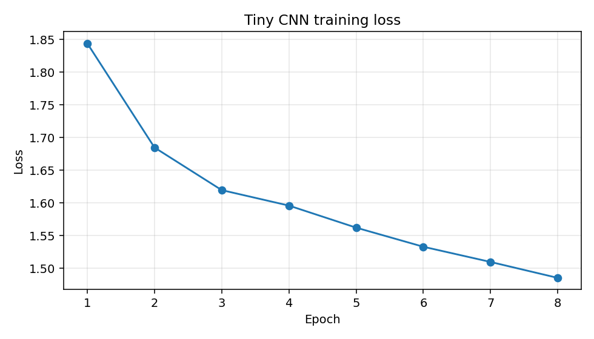
Fig 8.11. Tiny CNN baseline loss.And last, the floor: what happens with no transfer learning at all.
A compact end-to-end CNN trained from scratch as the floor of the deep family:
it reaches only 48.1% accuracy. Transfer learning, not depth alone, is what
makes the deep models work here.
And last, the floor: what a deep model is worth with no transfer learning at all.
Look at the final accuracy, 48.1%, then back up at the 94.3% on the comparison grid. This is the control experiment for the whole deep branch. Same architecture family, same data, same schedule; the only thing removed is the pretrained weights. Nearly half the accuracy goes with them. So the honest claim is not “deep learning solves this” — it is “ImageNet-scale pretraining solves this, and a 31k-image dataset is nowhere near enough to learn material texture from scratch”.
Would a bigger scratch model close the gap? Unlikely at this data scale, and the classical branch is the evidence. Tree ensembles on 637 hand-designed features reach 73.8%, well above any from-scratch network here, because they encode prior knowledge the network would have to learn from data it does not have.
D · The torch retrain pair, with confusion matrices
The 15-epoch ResNet50 / MobileNetV2 runs above, completed with their matrices.
Fig 8.12. Validation accuracy per epoch, both retrains.📈 live chart
Solid: validation accuracy. Dashed: train accuracy. ResNet50’s
best validation loss lands at epoch 3, MobileNetV2’s at epoch 6 — the
memorization story told by the curves in subsection C above, replotted from
training_history.csv.
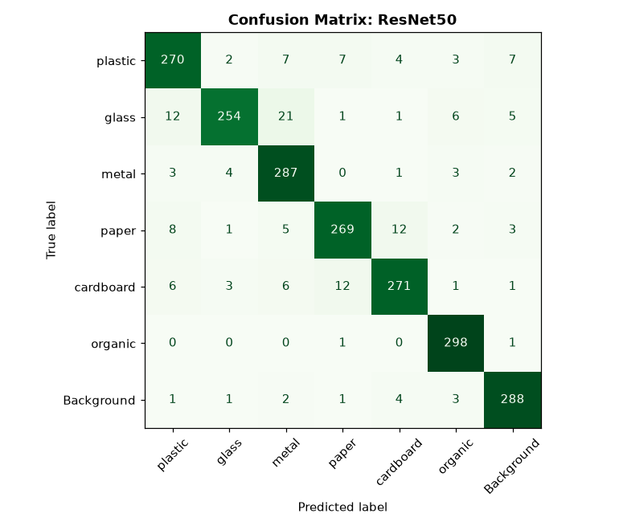
Fig 8.13. ResNet50 retrain confusion matrix.92.2% accuracy, 23.8M parameters, 91 MB on disk.
Balanced-crop test confusion for the 15-epoch ResNet50 retrain. Strong diagonal;
the usual paper–cardboard trade.
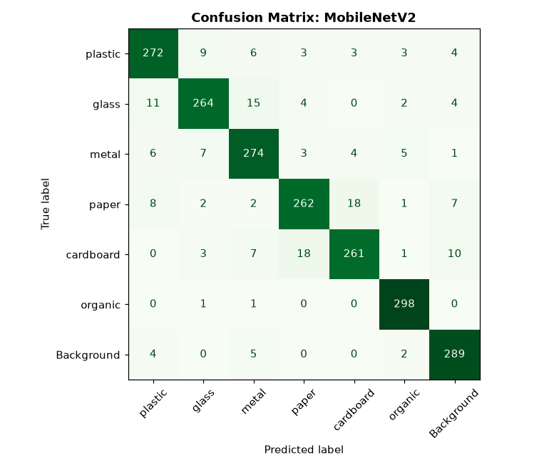
Fig 8.14. MobileNetV2 retrain confusion matrix.91.4% accuracy from a tenth of the parameters (2.4M, 9.3 MB).
Near-identical error structure at a fraction of the size — the efficiency
argument in matrix form.
09 / 14 Evaluation Metrics
Every number below is tied to a report in the repository.
Classification is scored with accuracy and macro-F1 on the quarantined clean
test set; detection with precision, recall, mAP50, and mAP50-95 on the clean
validation split. The evaluation sets were audited with perceptual hashing
before any of these numbers were measured.
Classifier accuracy, clean test92.93%ConvNeXt + 637-feature classifier, 2,151 quarantined-test imagesDetector mAP50, clean val74.9%YOLO26m, 100-epoch retrain, quarantined splitEval leakage found & removed2,40643% of the old classifier test setCross-domain accuracy39.0%Studio-trained features on real-world images
!
Two baselines, one trap. 92.93% is clean-test accuracy on quarantined crops; 88.9% is accuracy on the detector’s own production crops. Quote the first for model quality and the second for what a user experiences — mixing them is how numbers get inflated by accident.
Detector precision83.4%
Clean validation split. Up from 78.1% on YOLO26s. Tunable via confidence threshold.
Detector recall67.2%
Clean-val recall dipped slightly from YOLO26s's 69.0% while promoting to the 100-epoch YOLO26m retrain, but field recall, the metric that matters more, rose 70.9% to 78.1% at the same confidence threshold.
Detector mAP50-9557.0%
100-epoch YOLO26m checkpoint, promoted to the live localizer.
Fig 9.1. Precision–recall curve.The four cards above are single points; this is the full surface they were picked from.
Per-class and mean PR curves for the detector. The area under each curve is that
class's AP; the confidence threshold picks the live operating point along it.
The four metric cards above are single points. This is the whole surface they were chosen from.
Pick one curve and slide along it. 83.4% precision and 67.2% recall is one point on that curve — any other point could have been picked instead. Quoting precision and recall as if they were fixed properties of a detector is the most common mistake in this kind of report. They are a choice. Anyone can raise either one by moving the threshold; what cannot be moved is the curve itself. That is why mAP, the area underneath it, is the threshold-free comparison.
Why do the classes separate so widely? Because per-class AP tracks object size and source almost exactly. The classes sitting lowest are the ones Fig 3.3 flagged as majority-small-box.
Fig 9.2. F1–confidence curve.And here's why the threshold sits off the peak, on purpose.
F1 as a function of the confidence threshold. The deployed threshold sits near the
curve's peak, lowered deliberately for the field domain, trading a little
precision for the recall the use case needs.
And here is why the deployed threshold deliberately sits off the peak.
Find the peak of the F1 curve, then look slightly to its left — that is where the system actually runs. Peak F1 is only the right answer if a false positive and a false negative cost the same. For this application they do not. A missed bottle is waste that never gets sorted; a false alarm is a box the user glances at and dismisses. So the threshold is lowered on purpose, buying recall with precision.
Is that post-hoc justification? No — it is measured. The sweep in Fig 9.3 shows the exact recall gained at each threshold, in both domains, and the choice was made from that table.
Fig 9.3. Confidence-threshold sweep, both domains.That threshold choice was not a guess. This is the table it came from.
Recall at four confidence thresholds, measured separately for field and studio
data and for all boxes versus small boxes only. Dropping the threshold from
0.10 to 0.04 lifts field recall 50.5% → 58.6% and field
small-box recall 31.8% → 43.2%, while studio recall also
rises 58.4% → 63.7%. Blank cells were not run.
The expected result here was a trade-off. There isn't one, and that is worth pausing on.
Read the field small-box row left to right: 31.8, 35.6, 39.0, 43.2. Then watch the studio row do the same thing. The assumption going in was that tuning the detector towards field conditions would cost studio performance. It does not. Both domains gain, and the small-box rows gain fastest, because small objects are exactly the detections that sit just under a high confidence bar. This is the cheapest improvement in the entire project: no retraining, one config value.
What does it cost? Precision, which is not on this chart and deserves to be stated rather than skipped. More boxes are proposed, so more of them are wrong. For this application that is the right side to err on, and the Background veto in stage two removes a large share of the extra false alarms before the user sees them.
Fig 9.4. Per-class precision, recall and F1 (deployed classifier).And the classifier's side of the ledger, one row per class.
Every per-class score for the deployed ConvNeXt + 637-feature model on the clean
hard-case test split (2,151 crops, 92.93% accuracy, macro-F1 0.929). No class
falls below 0.88 on any metric. Organic and Background lead; Metal has the
weakest precision (0.884) and Paper the weakest recall (0.882).
Read this as a floor, not an average. The question it answers is “is any class quietly broken?”
Start with the two lightest cells: Metal precision 0.884 and Paper recall 0.882. Those are the worst numbers on the whole grid. A headline accuracy can hide a class sitting at 40% if the others carry it. Here the weakest single cell is 0.882, so nothing is being carried. The asymmetry is readable too: Metal's precision is lower than its recall, meaning the model over-assigns Metal, while Paper is the reverse — under-assigned, because some of it is being called Cardboard.
Why does this differ from the 3,194-crop matrix in the Deep Learning chapter? Different evaluation set. This is the clean hard-case split from convnext_clean_eval.json; Fig 8.4 is the merged clean test split. Both are leakage-quarantined, both use the same weights, and each figure states its own n so the two are never confused.
10 / 14 Model Comparison
Every model that was trained, on one board.
The two tracks meet here. Anything trained anywhere in this project is brought
forward into this chapter so the comparisons are in one place instead of
scattered: classical against deep, deep against deep, and the two later
benchmark campaigns — a matched-budget detector sweep over
seven architectures (YOLO26m, YOLOv8m, YOLO11m, RT-DETR-l, Faster R-CNN,
RetinaNet, FCOS) at the same 30-epoch budget, and a Stage-2 backbone
rematch putting six frozen backbones against the deployed classifier on
the leakage-quarantined hard-case split. Every live chart below renders from the
run artifacts in runs/dl/.
A · Classical against deep
Same crop benchmark, both tracks, one axis.
Deep architecture shoot-outsame data, same split
EfficientNetB0: 94.3% at 16.8 MB vs ResNet50's 92.2% at 95.1 MB.
MobileNetV2 91.4% (9.6 MB, 2.4M params) · ResNet50 92.2% (95.1 MB,
23.8M params) · EfficientNetB0 94.3% (16.8 MB, 4.2M params). Sizes are
FP32 weights derived from the parameter count, so the three are compared on one
basis. Compound scaling wins the accuracy-per-megabyte race. These figures predate the leakage
audit; the audited successor is the deployed ConvNeXt at 92.93% on the
clean test set.
Classical ML baselineexplainable evidence
73.8%: ExtraTrees on 637 handcrafted features.
The full ranking and the confusion matrices are in the ML track chapter.
Carried forward here so the ~20-point gap to the deployed deep classifier
sits next to the deep numbers it is being compared against, rather than
three chapters away.
Fig 10.1. Classical ML vs deep baseline.Whole classical family against the deep baseline, side by side.
On the same crop benchmark, tree ensembles (ExtraTrees 63.1%, RF 63.2%) clearly beat
linear models and the from-scratch tiny CNN (48.1%), but all classical
models trail the transfer-learned deep classifiers.
The whole classical family against the deep baseline, on one axis.
Look at the gap between the best tree ensemble and the transfer-learned deep models — then at the from-scratch CNN sitting below the trees. The ordering is the interesting part, not the winner. Hand-designed features with a tree ensemble beat a neural network trained from scratch on the same data. Deep learning only pulls ahead once pretrained weights are involved. So the real dividing line in this chart is not classical against deep — it is with prior knowledge against without.
Why is the deployed system deep anyway? Roughly 20 points of accuracy. And the hybrid keeps the handcrafted features in the loop, so the interpretable evidence is not discarded.
B · Seven detectors, one budget
Same merged dataset, same 30 epochs, wildly different outcomes.
i
The whole round in one sentence. RT-DETR-l tops the detector sweep
(56.2% test mAP50, +8.0 points over YOLO26m) but costs 2× the training time;
Swin-Tiny and ConvNeXtV2 edge the deployed classifier by +0.7 points at a
12–30% CPU-latency premium in matched-session measurements; MobileNetV3-L
gives up 1.8 points but runs roughly 2.7× faster. Nothing was
promoted: the deployed pair still holds the best accuracy-per-millisecond trade,
and that is the honest reading of both boards.
Fig 10.2. Detector sweep: validation vs test mAP50.📊 live chart
Validation (muted) and unseen-session test (solid) mAP50 for each
architecture, trained on the merged six-source detection dataset (TACO, TrashNet,
WaDaBa, GINI, Roboflow, PlastOPol — the Dataset chapter) and tested on its held-out
unseen-session split. Source: sweep_seven_architecture_metrics.json.
Two stories in one chart: who wins, and how far every bar falls from validation to test.
Before naming any winner, look at the gap between each model’s pale bar and solid bar. Every architecture drops 15–24 points from validation to the unseen-session test set. That gap is a property of the dataset’s domain shift, not of any model, and no architecture in the sweep closes it. Within that ceiling, RT-DETR-l is the clear winner at 56.2% test mAP50 — eight points over the deployed YOLO26m at the same budget.
Why is YOLO26m still the deployed detector? The sweep is a 30-epoch matched-budget comparison; the production model is a 100-epoch retrain tuned to a field-recall operating point, and RT-DETR-l costs 3.2 training hours against YOLO26m’s 1.6 for the same 30 epochs. RT-DETR is the strongest candidate for a future promotion — not evidence the current choice was wrong.
Fig 10.3. Training curves: mAP50 per epoch, four Ultralytics-family runs.📈 live chart
Per-epoch validation mAP50 for the four runs with curve logs
(torchvision runs log only final metrics). The draw-in animation replays the
30-epoch schedule.
!
The per-class floor is the real finding. On the merged dataset’s
unseen-session test split, Glass AP collapses for every architecture
(0.03–0.29) and Organic never passes 0.18. Seven architectures, one shared
failure: that is a dataset property. More field-condition Glass and Organic
examples — TACO- and PlastOPol-style captures — would move these
numbers; another architecture will not.
C · Six backbones vs the deployed classifier
Same 637 handcrafted features, same MLP head, same quarantined split — only the frozen backbone changes.
Fig 10.4. Stage-2 rematch leaderboard: test accuracy and CPU latency.📊 live chart
Test accuracy on the 2,696-crop quarantined hard-case split; the
chip is median CPU latency per crop (each candidate from its own benchmark session;
the deployed row is the median across all six sessions, which individually measured
47.6–58.7 ms). The highlighted row is the deployed ConvNeXt-Tiny + 637
model measured on the same split. Bars start at 75%.
The deployed model survives its own rematch — and the two challengers that beat it pay for the privilege.
Find the deployed row first, then the two rows above it. Swin-Tiny and ConvNeXtV2 win by seven-tenths of a point, but both pay for it in CPU latency: measured against the deployed model in each candidate’s own benchmark session, Swin-Tiny costs +7 ms (+12%) and ConvNeXtV2 +15 ms (+30%) per crop, for a margin inside day-to-day noise. MobileNetV3-L is the interesting one: 92.1% at 18.5 ms, roughly 2.7× faster than production — the obvious pick if this ever moves on-device.
What about EfficientNetV2-S at 80.2%? It is uniformly weak across all seven classes on both validation and test, so it is not a bad split or a broken run. Its frozen features simply separate this domain poorly without fine-tuning; the benchmark freezes every backbone on purpose, and this is the failure mode that policy exposes.
Fig 10.5. Per-class F1 heatmap, all seven models.🔥 live heatmap
Test-split F1 per class. Organic is nearly every model’s
best class (ResNet50’s is Background, by 0.06 points); Plastic and Paper are
the contested ones. EfficientNetV2-S is weak everywhere at once, which rules out a
single-class explanation.
Fig 10.6. Confusion matrices, recomputed from the stored test features.🧩 live matrix
Rows are true classes, columns are predictions; each cell shows
the raw count, colour shows the row-normalized rate (green diagonal = correct, red
off-diagonal = confusion). Every matrix was verified to reproduce its run’s
reported accuracy to four decimals.
Six matrices, one shared shape: strong diagonals, and the same two leaks the deployed model has.
Whichever model is selected, find the Plastic→Background cell, then the Paper↔Cardboard pair. The error structure barely changes across backbones. Plastic leaking into Background and Paper trading with Cardboard are the two residual confusions in every matrix — the same pair the deployed model shows in the Deep Learning chapter. Swapping the backbone changes how often those cells fire, not which cells fire. More evidence the remaining errors live in the data, not the architecture.
How were these matrices produced when the runs only saved metrics? The benchmark caches every test crop’s features, so the saved MLP head was re-run over the cached features and the predictions cross-checked against each run’s logged accuracy before rendering.
D · The raw training logs
Unedited logs from the new runs, served straight from the repository.
Fig 10.7. Training logs.📜 raw log
Loading log…
Three logs, served as-is from the repository: the Stage-2
backbone sweep runner (runs/dl/_stage1_extra_logs/train.log), the
RT-DETR-l training log (runs/rtdetr_train_cleaned.txt), and the torch
retrain pair (runs/torch_cmp.log). Epoch summaries and final metrics
are highlighted.
✓
What this round actually decided. Keep ConvNeXt-Tiny + 637 in
production; shortlist RT-DETR-l for the next detector promotion once a
field-operating-point comparison is run; keep MobileNetV3-L as the on-device
fallback. Three concrete decisions, all made on same-split, same-budget evidence.
11 / 14 Experimental Results
What the experiments actually changed.
The headline experiments: fine-tuning the classifier on the detector's own crops lifted
production-distribution accuracy from 76.9% to 88.9% without losing
clean-crop accuracy (92.9% → 92.93%, unchanged within noise). Promoting YOLO26s to a 100-epoch YOLO26m
retrain lifted field recall from 70.9% to 78.1% and field small-object
recall from 58.6% to 68.2% at the same threshold. Hard-negative mining
on new field data (PlastOPol) lifted held-out small-object recall from
38.6% to 54.7%. New data, not architecture, was the lever.
✓
Every lift in this section came from data, not architecture: crop fine-tuning +12.0 points, hard-negative mining +16.1 points, the YOLO26m promotion +7.2 points of field recall. That pattern — data is the lever — is the project’s main lesson, and the new training round in the Model Comparison chapter confirms it from the architecture side.
Fig 11.1. Field scene: bottle on grass.The pipeline running on the conditions it was built for. First: a bottle on grass.
Full pipeline output on an outdoor field photo: the detector localizes the bottle,
the classifier verifies Plastic, and the fused score routes it to Recycling.
Enough charts. This is the pipeline doing its job on the conditions it was built for.
Follow the output in order: the box, then the material label, then the bin route. That order is the pipeline. This is a single object on a cluttered natural background — the easy end of the field domain, and still much harder than any studio image in Fig 2.5. Grass is high-frequency texture that a detector can easily propose boxes on; the Background class is what stops that.
Were these examples cherry-picked? These three were chosen to span easy, small-object, and cluttered cases rather than to show only successes. The live demo in the Live Demo takes arbitrary uploads, which is the real test.
Fig 11.2. Field scene: cans on the street.Next, the small-object regime the EDA flagged earlier.
Multiple small metal objects in one frame: the small-object regime the
dataset EDA flagged. Each can is localized and verified independently.
Next, the exact regime the EDA warned about: several small objects in one frame.
Find the smallest can in the frame — and note honestly any object the detector missed. This is where localize-first pays off most visibly. A whole-image classifier returns one label for this photo. The two-stage pipeline returns one verified material per can, each with its own confidence, because each crop is judged on its own.
What about the misses? Field small-object recall is 68.2% at the deployed operating point, so roughly one small object in three is still missed. That is the project's largest open weakness, and the Discussion chapter states it as such.
Fig 11.3. Cluttered indoor scene.And the hardest case: clutter, mixed materials, bad lighting.
A messy kitchen frame: overlapping objects, mixed materials, hard lighting. The
Background veto suppresses non-waste regions the detector proposes.
And the hardest case: clutter, overlap, mixed materials, and indoor lighting all at once.
Look at the regions with no box on them — a counter edge, a reflective surface — that a naive detector would have fired on. The Background class is doing the visible work here. In a scene this busy the detector proposes far more regions than there are objects, and without a veto stage the interface would fill with confident labels on worktops and shadows. Suppressing a proposal is a result, even though it leaves nothing on screen to see.
Why are overlapping objects still hard? Crops of overlapping items contain two materials, and the classifier is trained to return one. That is a known limitation of crop-level verification, not a bug in this particular scene.
Fig 11.4. Grad-CAM: where the classifier looks.Now a different question: not whether it's right, but where it's looking.
Class-activation heatmap over a verified crop: the hot region sits on the object's
material surface, not the background. This is evidence the classifier learned
material texture rather than scene context.
Now a different question entirely. Not “is it right?” but “is it right for the right reason?”
Notice the hot region — and, just as importantly, the cool background around it. This directly answers the worry raised back at Fig 2.5. If the classifier had learned studio backgrounds instead of materials, the heat would sit on the surroundings. It sits on the object surface. This is the deep branch independently agreeing with the classical branch's feature importances in Fig 5.6, which found colour and texture dominant and spatial features negligible.
How much weight should Grad-CAM carry? It is supporting evidence, not proof. Saliency maps are known to be reconstructions rather than the model's actual reasoning. It is convincing here because it agrees with a second, independent line of evidence.
Fig 11.5. Grad-CAM: plastic under field lighting.Same check, now on a field-domain item.
The same visualization on a field-domain plastic item: activation follows the
specular highlights and label texture that distinguish plastic from glass.
The same check, now on a field-domain item — because the studio case alone would prove nothing.
Notice where the activation concentrates: the specular highlights on the surface and the label region. Plastic and glass are the pair most at risk of being separated by background cues rather than material, since studio glass and studio plastic sit on the same white sweep. Here, on a field photo, the model is keying on highlight structure and label texture — properties of the object itself.
Does that generalise to every field image? No, and the domain confusion matrix in the Deep Learning chapter gives the honest aggregate: 91.3% on field crops against 96.5% on studio. The gap is real; this figure explains what the model uses when it gets it right.
12 / 14 Discussion
Measured limits, and what was done about them.
Domain shiftPartly fixed, partly open
Fixed: the classifier was fine-tuned on the detector's own crops, lifting
production-distribution accuracy from 76.9% to 88.9%. The detector was re-tuned
for the field domain too: lowering the confidence threshold and hard-negative
mining on new field data (PlastOPol) lifted held-out field small-object recall
from 38.6% to 54.7%, at a small cost to studio mAP50 (72.1% → 70.9%). Open:
on fully unseen capture sessions the detector still drops to 0.444 mAP50; the
gap is narrowing with new data, not fully closed.
Tiny objectsResolution ruled out; new data confirmed as the lever
A 960px training run was evaluated: validation unchanged, unseen-batch recall
up 3.9 points, not enough to chase. A later hard-negative mining fine-tune
on new field data confirmed the real lever: small-object recall on that held-out
domain rose 38.6% to 54.7% from new data alone, no resolution or architecture
change. Small objects remain the main source of misses; training-data diversity
is the binding constraint.
Material-first routingNo disposability judgment
The app reports what an object is made of and routes that material to its bin. It
does not judge whether the item should actually be thrown away; that
waste-state decision was removed because there was no dataset to train it reliably.
Method note. Metrics on this site come from the leakage-audited evaluation sets. The audit scripts, quarantine manifest, and reports live in the project repository. The Stage-2 architecture shoot-out (EfficientNetB0, ResNet50, MobileNetV2) is measured on the balanced crop benchmark that predates the quarantine, so all three share one test set and stay comparable to each other, but not to the 92.93% clean-test headline.
13 / 14 Conclusion & Future Work
A working, honestly-measured waste scanner.
The project delivers a deployed two-stage pipeline (92.93% clean-test material
accuracy, 74.9% detector mAP50) and, just as importantly, a worked example of
finding and fixing one's own evaluation bug. The classical branch keeps every headline
claim explainable; the audit trail keeps it honest.
Data beats resolution for small objects38.6% → 54.7%
Future work
Where it goes next
More field-domain dataclose the 0.444 mAP50 gap
Waste-state judgmentneeds a new dataset
On-device inferenceTFLite <10 MB path
Open-set rejectionunknown-material veto
2pipeline stages
7material classes
637handcrafted features
80,993detector training boxes
14 / 14 Live Demo
The real model, served publicly.
This is not a mock-up: the trained YOLO26m localizer and ConvNeXt classifier run on a
Hugging Face Space backend, served through this page. Upload a photo or pick a sample;
the scan follows the exact pipeline order: localize, crop, verify, fuse & route.
S1Upload
S2Localize
S3Crop
S4Verify
S5Fuse
No image selectedChoose a sample below or upload your own photo.
Top materialNo scan yet
Confidence--
Bin routeWaiting
Possible material
--
Context
--
Latency
--
Class scores7 classes
Recent scans
Restore a saved scan to bring back the image, result, confidence, route, and boxes. History lives in your browser.
0 saved
Fig 14.1. Deployed scanner in action.A fallback record of the scan above, in case the backend is asleep right now.
The production frontend on a real scan: detection boxes over the photo, verified
material, fused confidence, and the bin route.
Insurance. If the model host is cold and the live scan above is still spinning, this is the same thing, captured.
The boxes over the photo and the material label beside them are exactly what the live result shows. This is a captured run of the same deployment, not a mock-up — so the walkthrough is identical either way, and the live scan above works once the backend has woken up.
Why does the backend sleep at all? The model server runs on a free Hugging Face Space tier that suspends when idle, so the first request after a quiet period pays a cold start. The pipeline itself is not slow — the hosting tier is.
Fig 14.2. Per-class score breakdown.And the score panel underneath it, same numbers you'd see live.
The score panel after a scan: all 7 class probabilities including the Background
veto, plus latency and scene context.
And the score panel underneath it — which is where the honesty of the interface lives.
Look at the runner-up class, not the winner. Showing all seven probabilities means a 94% call and a 34% call do not look the same to the user. If the top two are close, that is visible rather than hidden behind a single confident label. Paper and cardboard genuinely confuse in every model in this project — a user deserves to see when that is what happened.
What does “context” mean in this panel? The scene-context prior from S5, which nudges class scores using the surrounding scene before the final routing decision.